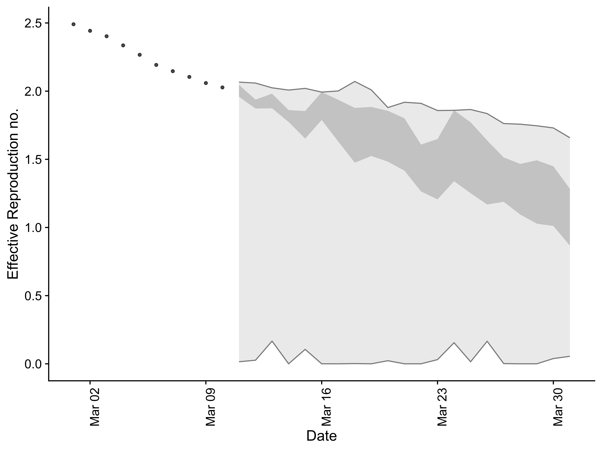
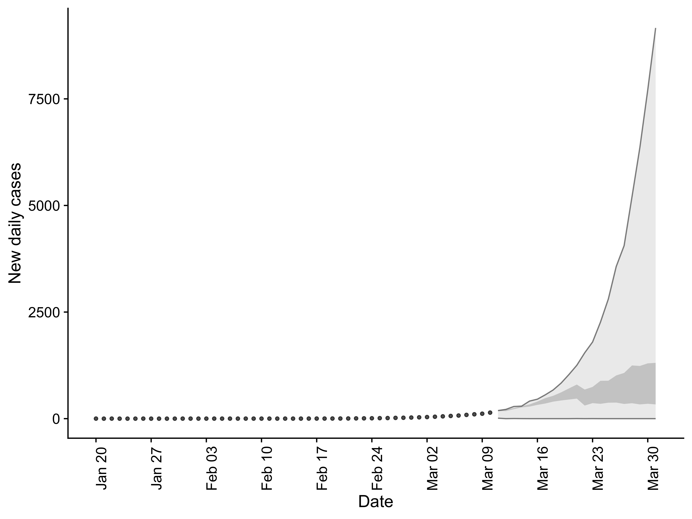
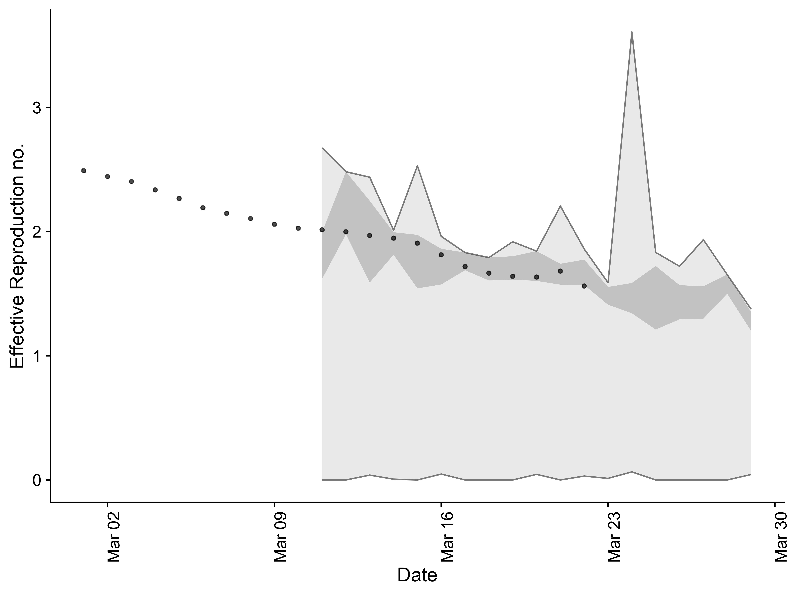
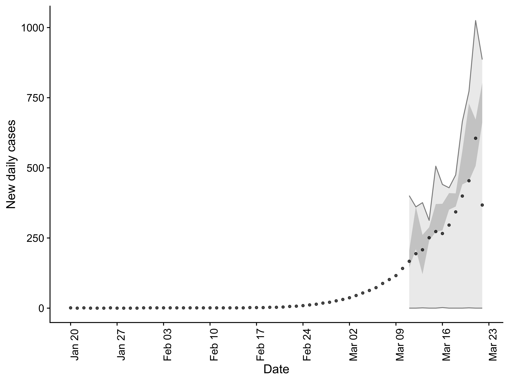

introduction.RmdThis vignette briefly outlines the functionality of EpiSoon. To get started load the required packages.
bsts for models, ggplot2 for plotting, and cowplot for theming)EpiSoon::example_obs_rts #> rt date #> 1 2.490547 2020-03-01 #> 2 2.442588 2020-03-02 #> 3 2.402473 2020-03-03 #> 4 2.335572 2020-03-04 #> 5 2.266551 2020-03-05 #> 6 2.192293 2020-03-06 #> 7 2.146429 2020-03-07 #> 8 2.104371 2020-03-08 #> 9 2.059281 2020-03-09 #> 10 2.027134 2020-03-10 #> 11 2.014678 2020-03-11 #> 12 1.998946 2020-03-12 #> 13 1.968350 2020-03-13 #> 14 1.947376 2020-03-14 #> 15 1.906984 2020-03-15 #> 16 1.812842 2020-03-16 #> 17 1.718532 2020-03-17 #> 18 1.665646 2020-03-18 #> 19 1.639927 2020-03-19 #> 20 1.633795 2020-03-20 #> 21 1.682025 2020-03-21 #> 22 1.561653 2020-03-22
bsts model and produce a Rt forecast. Any appropriately wrapped model can be used (see bsts_model and fable_model for an examples).rt_forecast <- forecast_rt(EpiSoon::example_obs_rts[1:10, ], model = function(...){EpiSoon::bsts_model(model = function(ss, y){bsts::AddAutoAr(ss, y = y, lags = 10)}, ...)}, horizon = 21, samples = 10) rt_forecast #> # A tibble: 210 x 4 #> sample date rt horizon #> <int> <date> <dbl> <int> #> 1 1 2020-03-11 0.0150 1 #> 2 2 2020-03-11 1.93 1 #> 3 3 2020-03-11 2.00 1 #> 4 4 2020-03-11 2.05 1 #> 5 5 2020-03-11 1.96 1 #> 6 6 2020-03-11 2.03 1 #> 7 7 2020-03-11 1.94 1 #> 8 8 2020-03-11 2.03 1 #> 9 9 2020-03-11 1.97 1 #> 10 10 2020-03-11 2.07 1 #> # … with 200 more rows
rt_scores <- score_forecast(rt_forecast, EpiSoon::example_obs_rts) rt_scores #> # A tibble: 12 x 11 #> date horizon dss crps logs bias sharpness calibration median #> <date> <int> <dbl> <dbl> <dbl> <dbl> <dbl> <dbl> <dbl> #> 1 2020-03-11 1 -0.904 0.0387 -1.63 -0.200 0.0672 0.0151 0.0569 #> 2 2020-03-12 2 -0.911 0.0698 -0.766 -0.6 0.0486 0.0151 0.187 #> 3 2020-03-13 3 -1.10 0.0487 -1.28 -0.400 0.0923 0.0151 0.119 #> 4 2020-03-14 4 -0.902 0.100 -0.297 -0.8 0.0666 0.0151 0.267 #> 5 2020-03-15 5 -1.01 0.101 -0.369 -0.400 0.150 0.0151 0.347 #> 6 2020-03-16 6 -1.05 0.0617 -0.577 -0.200 0.198 0.0151 0.0390 #> 7 2020-03-17 7 -1.12 0.0830 -0.247 -0.200 0.279 0.0151 0.138 #> 8 2020-03-18 8 -1.13 0.0945 -0.0800 -0.200 0.323 0.0151 0.132 #> 9 2020-03-19 9 -1.17 0.0861 -0.126 0 0.362 0.0151 0.0579 #> 10 2020-03-20 10 -1.21 0.0984 -0.119 -0.200 0.378 0.0151 0.210 #> 11 2020-03-21 11 -1.08 0.115 -0.0608 -0.200 0.362 0.0151 0.392 #> 12 2020-03-22 12 -1.25 0.0899 -0.130 -0.200 0.255 0.0151 0.187 #> # … with 2 more variables: iqr <dbl>, ci <dbl>
summarise_scores(rt_scores) #> Warning: attributes are not identical across measure variables; #> they will be dropped #> # A tibble: 9 x 8 #> score bottom lower median mean upper top sd #> <chr> <dbl> <dbl> <dbl> <dbl> <dbl> <dbl> <dbl> #> 1 bias -0.745 -0.400 -0.200 -0.3 -0.200 -0.055 0.217 #> 2 calibration 0.0151 0.0151 0.0151 0.0151 0.0151 0.0151 0 #> 3 ci 1.51 1.59 1.61 1.61 1.64 1.71 0.0589 #> 4 crps 0.0415 0.0678 0.0880 0.0822 0.0989 0.111 0.0230 #> 5 dss -1.24 -1.14 -1.09 -1.07 -0.988 -0.902 0.117 #> 6 iqr 0.0900 0.245 0.354 0.300 0.380 0.420 0.113 #> 7 logs -1.53 -0.624 -0.272 -0.473 -0.124 -0.0661 0.510 #> 8 median 0.0439 0.103 0.162 0.178 0.225 0.380 0.112 #> 9 sharpness 0.0535 0.0860 0.226 0.215 0.332 0.374 0.127
summarised_rt_forecast <- summarise_forecast(rt_forecast) summarised_rt_forecast #> # A tibble: 21 x 9 #> date horizon median mean sd bottom lower upper top #> <date> <int> <dbl> <dbl> <dbl> <dbl> <dbl> <dbl> <dbl> #> 1 2020-03-11 1 1.99 1.80 0.629 0.0150 1.96 2.05 2.07 #> 2 2020-03-12 2 1.91 1.75 0.607 0.0263 1.87 1.94 2.06 #> 3 2020-03-13 3 1.91 1.75 0.562 0.166 1.87 1.98 2.02 #> 4 2020-03-14 4 1.81 1.66 0.588 0 1.77 1.86 2.01 #> 5 2020-03-15 5 1.73 1.63 0.554 0.106 1.65 1.85 2.02 #> 6 2020-03-16 6 1.79 1.63 0.588 0 1.79 1.99 1.99 #> 7 2020-03-17 7 1.65 1.56 0.578 0 1.63 1.94 2.00 #> 8 2020-03-18 8 1.60 1.54 0.583 0.00158 1.47 1.88 2.07 #> 9 2020-03-19 9 1.61 1.52 0.573 0 1.52 1.88 2.01 #> 10 2020-03-20 10 1.53 1.47 0.548 0.0227 1.48 1.86 1.88 #> # … with 11 more rows
plot_forecast(summarised_rt_forecast, EpiSoon::example_obs_rts)

EpiSoon::example_obs_cases #> # A tibble: 63 x 2 #> cases date #> <dbl> <date> #> 1 1 2020-01-20 #> 2 0 2020-01-21 #> 3 1 2020-01-22 #> 4 0 2020-01-23 #> 5 0 2020-01-24 #> 6 0 2020-01-25 #> 7 1 2020-01-26 #> 8 0 2020-01-27 #> 9 0 2020-01-28 #> 10 0 2020-01-29 #> # … with 53 more rows
EpiSoon::example_serial_interval #> 1 2 3 4 5 6 7 8 9 10 11 12 14 #> 0.00 0.03 0.25 0.17 0.09 0.15 0.13 0.05 0.05 0.03 0.02 0.01 0.01 0.01
case_forecast <- forecast_cases(EpiSoon::example_obs_cases, rt_forecast, serial_interval = EpiSoon::example_serial_interval) case_forecast #> sample date cases horizon #> 1 1 2020-03-11 3 1 #> 2 1 2020-03-12 4 2 #> 3 1 2020-03-13 14 3 #> 4 1 2020-03-14 0 4 #> 5 1 2020-03-15 7 5 #> 6 1 2020-03-16 0 6 #> 7 1 2020-03-17 0 7 #> 8 1 2020-03-18 0 8 #> 9 1 2020-03-19 0 9 #> 10 1 2020-03-20 1 10 #> 11 1 2020-03-21 0 11 #> 12 1 2020-03-22 0 12 #> 13 1 2020-03-23 0 13 #> 14 1 2020-03-24 0 14 #> 15 1 2020-03-25 0 15 #> 16 1 2020-03-26 0 16 #> 17 1 2020-03-27 0 17 #> 18 1 2020-03-28 0 18 #> 19 1 2020-03-29 0 19 #> 20 1 2020-03-30 0 20 #> 21 1 2020-03-31 0 21 #> 22 2 2020-03-11 156 1 #> 23 2 2020-03-12 187 2 #> 24 2 2020-03-13 252 3 #> 25 2 2020-03-14 243 4 #> 26 2 2020-03-15 325 5 #> 27 2 2020-03-16 393 6 #> 28 2 2020-03-17 496 7 #> 29 2 2020-03-18 567 8 #> 30 2 2020-03-19 652 9 #> 31 2 2020-03-20 745 10 #> 32 2 2020-03-21 836 11 #> 33 2 2020-03-22 989 12 #> 34 2 2020-03-23 1059 13 #> 35 2 2020-03-24 1347 14 #> 36 2 2020-03-25 1412 15 #> 37 2 2020-03-26 1584 16 #> 38 2 2020-03-27 1652 17 #> 39 2 2020-03-28 1787 18 #> 40 2 2020-03-29 2053 19 #> 41 2 2020-03-30 2236 20 #> 42 2 2020-03-31 2165 21 #> 43 3 2020-03-11 173 1 #> 44 3 2020-03-12 195 2 #> 45 3 2020-03-13 274 3 #> 46 3 2020-03-14 268 4 #> 47 3 2020-03-15 334 5 #> 48 3 2020-03-16 389 6 #> 49 3 2020-03-17 412 7 #> 50 3 2020-03-18 410 8 #> 51 3 2020-03-19 472 9 #> 52 3 2020-03-20 496 10 #> 53 3 2020-03-21 549 11 #> 54 3 2020-03-22 588 12 #> 55 3 2020-03-23 524 13 #> 56 3 2020-03-24 585 14 #> 57 3 2020-03-25 545 15 #> 58 3 2020-03-26 564 16 #> 59 3 2020-03-27 519 17 #> 60 3 2020-03-28 579 18 #> 61 3 2020-03-29 551 19 #> 62 3 2020-03-30 552 20 #> 63 3 2020-03-31 485 21 #> 64 4 2020-03-11 183 1 #> 65 4 2020-03-12 190 2 #> 66 4 2020-03-13 240 3 #> 67 4 2020-03-14 258 4 #> 68 4 2020-03-15 285 5 #> 69 4 2020-03-16 343 6 #> 70 4 2020-03-17 308 7 #> 71 4 2020-03-18 390 8 #> 72 4 2020-03-19 462 9 #> 73 4 2020-03-20 472 10 #> 74 4 2020-03-21 483 11 #> 75 4 2020-03-22 569 12 #> 76 4 2020-03-23 544 13 #> 77 4 2020-03-24 603 14 #> 78 4 2020-03-25 528 15 #> 79 4 2020-03-26 555 16 #> 80 4 2020-03-27 653 17 #> 81 4 2020-03-28 610 18 #> 82 4 2020-03-29 488 19 #> 83 4 2020-03-30 570 20 #> 84 4 2020-03-31 466 21 #> 85 5 2020-03-11 158 1 #> 86 5 2020-03-12 197 2 #> 87 5 2020-03-13 226 3 #> 88 5 2020-03-14 250 4 #> 89 5 2020-03-15 282 5 #> 90 5 2020-03-16 321 6 #> 91 5 2020-03-17 357 7 #> 92 5 2020-03-18 427 8 #> 93 5 2020-03-19 412 9 #> 94 5 2020-03-20 444 10 #> 95 5 2020-03-21 516 11 #> 96 5 2020-03-22 557 12 #> 97 5 2020-03-23 532 13 #> 98 5 2020-03-24 570 14 #> 99 5 2020-03-25 682 15 #> 100 5 2020-03-26 612 16 #> 101 5 2020-03-27 695 17 #> 102 5 2020-03-28 703 18 #> 103 5 2020-03-29 697 19 #> 104 5 2020-03-30 713 20 #> 105 5 2020-03-31 789 21 #> 106 6 2020-03-11 183 1 #> 107 6 2020-03-12 165 2 #> 108 6 2020-03-13 290 3 #> 109 6 2020-03-14 292 4 #> 110 6 2020-03-15 351 5 #> 111 6 2020-03-16 405 6 #> 112 6 2020-03-17 450 7 #> 113 6 2020-03-18 547 8 #> 114 6 2020-03-19 625 9 #> 115 6 2020-03-20 757 10 #> 116 6 2020-03-21 772 11 #> 117 6 2020-03-22 943 12 #> 118 6 2020-03-23 1037 13 #> 119 6 2020-03-24 1239 14 #> 120 6 2020-03-25 1353 15 #> 121 6 2020-03-26 1469 16 #> 122 6 2020-03-27 1424 17 #> 123 6 2020-03-28 1694 18 #> 124 6 2020-03-29 1738 19 #> 125 6 2020-03-30 1914 20 #> 126 6 2020-03-31 2070 21 #> 127 7 2020-03-11 173 1 #> 128 7 2020-03-12 177 2 #> 129 7 2020-03-13 231 3 #> 130 7 2020-03-14 252 4 #> 131 7 2020-03-15 297 5 #> 132 7 2020-03-16 347 6 #> 133 7 2020-03-17 399 7 #> 134 7 2020-03-18 512 8 #> 135 7 2020-03-19 544 9 #> 136 7 2020-03-20 640 10 #> 137 7 2020-03-21 728 11 #> 138 7 2020-03-22 899 12 #> 139 7 2020-03-23 1006 13 #> 140 7 2020-03-24 1169 14 #> 141 7 2020-03-25 1402 15 #> 142 7 2020-03-26 1613 16 #> 143 7 2020-03-27 1856 17 #> 144 7 2020-03-28 2057 18 #> 145 7 2020-03-29 2052 19 #> 146 7 2020-03-30 2544 20 #> 147 7 2020-03-31 2814 21 #> 148 8 2020-03-11 166 1 #> 149 8 2020-03-12 200 2 #> 150 8 2020-03-13 217 3 #> 151 8 2020-03-14 256 4 #> 152 8 2020-03-15 256 5 #> 153 8 2020-03-16 288 6 #> 154 8 2020-03-17 320 7 #> 155 8 2020-03-18 313 8 #> 156 8 2020-03-19 354 9 #> 157 8 2020-03-20 381 10 #> 158 8 2020-03-21 352 11 #> 159 8 2020-03-22 418 12 #> 160 8 2020-03-23 412 13 #> 161 8 2020-03-24 466 14 #> 162 8 2020-03-25 498 15 #> 163 8 2020-03-26 490 16 #> 164 8 2020-03-27 570 17 #> 165 8 2020-03-28 611 18 #> 166 8 2020-03-29 590 19 #> 167 8 2020-03-30 640 20 #> 168 8 2020-03-31 612 21 #> 169 9 2020-03-11 175 1 #> 170 9 2020-03-12 205 2 #> 171 9 2020-03-13 231 3 #> 172 9 2020-03-14 269 4 #> 173 9 2020-03-15 273 5 #> 174 9 2020-03-16 322 6 #> 175 9 2020-03-17 365 7 #> 176 9 2020-03-18 411 8 #> 177 9 2020-03-19 452 9 #> 178 9 2020-03-20 436 10 #> 179 9 2020-03-21 510 11 #> 180 9 2020-03-22 531 12 #> 181 9 2020-03-23 542 13 #> 182 9 2020-03-24 617 14 #> 183 9 2020-03-25 604 15 #> 184 9 2020-03-26 635 16 #> 185 9 2020-03-27 648 17 #> 186 9 2020-03-28 640 18 #> 187 9 2020-03-29 650 19 #> 188 9 2020-03-30 703 20 #> 189 9 2020-03-31 681 21 #> 190 10 2020-03-11 177 1 #> 191 10 2020-03-12 217 2 #> 192 10 2020-03-13 246 3 #> 193 10 2020-03-14 281 4 #> 194 10 2020-03-15 349 5 #> 195 10 2020-03-16 407 6 #> 196 10 2020-03-17 432 7 #> 197 10 2020-03-18 519 8 #> 198 10 2020-03-19 647 9 #> 199 10 2020-03-20 695 10 #> 200 10 2020-03-21 871 11 #> 201 10 2020-03-22 930 12 #> 202 10 2020-03-23 1116 13 #> 203 10 2020-03-24 1339 14 #> 204 10 2020-03-25 1426 15 #> 205 10 2020-03-26 1660 16 #> 206 10 2020-03-27 1747 17 #> 207 10 2020-03-28 2091 18 #> 208 10 2020-03-29 2400 19 #> 209 10 2020-03-30 2743 20 #> 210 10 2020-03-31 3079 21
case_scores <- score_case_forecast(case_forecast, EpiSoon::example_obs_cases) case_scores #> # A tibble: 12 x 11 #> date horizon dss crps logs bias sharpness calibration median #> <date> <int> <dbl> <dbl> <dbl> <dbl> <dbl> <dbl> <dbl> #> 1 2020-03-11 1 7.93 5.39 3.74 0.200 12.6 0.00829 12 #> 2 2020-03-12 2 8.25 5.63 3.84 0 14.8 0.00829 3 #> 3 2020-03-13 3 8.61 22.2 5.37 0.8 20.0 0.00829 55 #> 4 2020-03-14 4 8.80 7.51 3.91 0.4 17.0 0.00829 12 #> 5 2020-03-15 5 9.11 17.6 5.01 0.5 51.1 0.00829 36 #> 6 2020-03-16 6 9.71 58.2 6.33 0.8 68.2 0.00829 158 #> 7 2020-03-17 7 9.94 54.9 6.05 0.8 83.0 0.00829 172 #> 8 2020-03-18 8 10.3 64.1 6.19 0.6 143. 0.00829 152 #> 9 2020-03-19 9 10.5 58.8 6.20 0.6 141. 0.00829 135 #> 10 2020-03-20 10 10.8 50.9 6.35 0.200 192. 0.00829 60 #> 11 2020-03-21 11 11.1 67.2 6.55 -0.200 279. 0.00829 146 #> 12 2020-03-22 12 12.2 192. 7.20 0.8 357. 0.00829 422 #> # … with 2 more variables: iqr <dbl>, ci <dbl>
summarise_scores(case_scores) #> Warning: attributes are not identical across measure variables; #> they will be dropped #> # A tibble: 9 x 8 #> score bottom lower median mean upper top sd #> <chr> <dbl> <dbl> <dbl> <dbl> <dbl> <dbl> <dbl> #> 1 bias -0.145 0.200 0.55 0.458 0.8 8.00e-1 0.342 #> 2 calibration 0.00829 0.00829 0.00829 0.00829 0.00829 8.29e-3 0 #> 3 ci 153. 233. 379. 436. 595. 8.57e+2 246. #> 4 crps 5.46 15.1 52.9 50.4 60.1 1.58e+2 50.9 #> 5 dss 8.02 8.75 9.82 9.77 10.6 1.19e+1 1.28 #> 6 iqr 17.0 54.1 237 244. 278. 8.63e+2 285. #> 7 logs 3.77 4.73 6.12 5.56 6.34 7.02e+0 1.18 #> 8 median 5.48 30 97.5 114. 154. 3.53e+2 116. #> 9 sharpness 13.2 19.3 75.6 115. 155. 3.35e+2 112.
summarised_case_forecast <- summarise_case_forecast(case_forecast) summarised_case_forecast #> # A tibble: 21 x 9 #> date horizon median mean sd bottom lower upper top #> <date> <int> <dbl> <dbl> <dbl> <dbl> <dbl> <dbl> <dbl> #> 1 2020-03-11 1 173 155. 54.1 3 173 183 183 #> 2 2020-03-12 2 192. 174. 61.3 4 187 205 217 #> 3 2020-03-13 3 236. 222. 76.4 14 226 252 290 #> 4 2020-03-14 4 257 237. 84.6 0 250 269 292 #> 5 2020-03-15 5 291 276. 100. 7 273 334 351 #> 6 2020-03-16 6 345 322. 120. 0 343 407 407 #> 7 2020-03-17 7 382 354. 137. 0 357 450 496 #> 8 2020-03-18 8 419 410. 165. 0 390 519 567 #> 9 2020-03-19 9 467 462 192. 0 354 544 652 #> 10 2020-03-20 10 484 507. 225. 1 381 640 757 #> # … with 11 more rows
plot_forecast(summarised_case_forecast, EpiSoon::example_obs_cases)

EpiSoon using the following:it_rt_forecast <- iterative_rt_forecast(EpiSoon::example_obs_rts, model = function(...){ EpiSoon::bsts_model(model = function(ss, y){bsts::AddAutoAr(ss, y = y, lags = 10)}, ...) }, horizon = 7, samples = 10, min_points = 4) it_rt_forecast #> # A tibble: 1,260 x 5 #> forecast_date sample date rt horizon #> <chr> <int> <date> <dbl> <int> #> 1 2020-03-05 1 2020-03-06 0 1 #> 2 2020-03-05 2 2020-03-06 2.16 1 #> 3 2020-03-05 3 2020-03-06 2.14 1 #> 4 2020-03-05 4 2020-03-06 2.09 1 #> 5 2020-03-05 5 2020-03-06 2.20 1 #> 6 2020-03-05 6 2020-03-06 2.17 1 #> 7 2020-03-05 7 2020-03-06 2.19 1 #> 8 2020-03-05 8 2020-03-06 2.24 1 #> 9 2020-03-05 9 2020-03-06 2.33 1 #> 10 2020-03-05 10 2020-03-06 1.99 1 #> # … with 1,250 more rows
it_cases_forecast <- iterative_case_forecast(it_fit_samples = it_rt_forecast, cases = EpiSoon::example_obs_cases, serial_interval = EpiSoon::example_serial_interval) it_cases_forecast #> forecast_date sample date cases horizon #> 1 2020-03-05 1 2020-03-06 0 1 #> 2 2020-03-05 1 2020-03-07 0 2 #> 3 2020-03-05 1 2020-03-08 0 3 #> 4 2020-03-05 1 2020-03-09 1 4 #> 5 2020-03-05 1 2020-03-10 0 5 #> 6 2020-03-05 1 2020-03-11 1 6 #> 7 2020-03-05 1 2020-03-12 0 7 #> 8 2020-03-05 2 2020-03-06 83 1 #> 9 2020-03-05 2 2020-03-07 97 2 #> 10 2020-03-05 2 2020-03-08 101 3 #> 11 2020-03-05 2 2020-03-09 112 4 #> 12 2020-03-05 2 2020-03-10 130 5 #> 13 2020-03-05 2 2020-03-11 160 6 #> 14 2020-03-05 2 2020-03-12 144 7 #> 15 2020-03-05 3 2020-03-06 89 1 #> 16 2020-03-05 3 2020-03-07 90 2 #> 17 2020-03-05 3 2020-03-08 118 3 #> 18 2020-03-05 3 2020-03-09 144 4 #> 19 2020-03-05 3 2020-03-10 169 5 #> 20 2020-03-05 3 2020-03-11 166 6 #> 21 2020-03-05 3 2020-03-12 246 7 #> 22 2020-03-05 4 2020-03-06 83 1 #> 23 2020-03-05 4 2020-03-07 85 2 #> 24 2020-03-05 4 2020-03-08 117 3 #> 25 2020-03-05 4 2020-03-09 142 4 #> 26 2020-03-05 4 2020-03-10 145 5 #> 27 2020-03-05 4 2020-03-11 193 6 #> 28 2020-03-05 4 2020-03-12 182 7 #> 29 2020-03-05 5 2020-03-06 73 1 #> 30 2020-03-05 5 2020-03-07 93 2 #> 31 2020-03-05 5 2020-03-08 103 3 #> 32 2020-03-05 5 2020-03-09 127 4 #> 33 2020-03-05 5 2020-03-10 146 5 #> 34 2020-03-05 5 2020-03-11 148 6 #> 35 2020-03-05 5 2020-03-12 175 7 #> 36 2020-03-05 6 2020-03-06 76 1 #> 37 2020-03-05 6 2020-03-07 106 2 #> 38 2020-03-05 6 2020-03-08 104 3 #> 39 2020-03-05 6 2020-03-09 134 4 #> 40 2020-03-05 6 2020-03-10 155 5 #> 41 2020-03-05 6 2020-03-11 188 6 #> 42 2020-03-05 6 2020-03-12 198 7 #> 43 2020-03-05 7 2020-03-06 90 1 #> 44 2020-03-05 7 2020-03-07 105 2 #> 45 2020-03-05 7 2020-03-08 124 3 #> 46 2020-03-05 7 2020-03-09 152 4 #> 47 2020-03-05 7 2020-03-10 153 5 #> 48 2020-03-05 7 2020-03-11 243 6 #> 49 2020-03-05 7 2020-03-12 235 7 #> 50 2020-03-05 8 2020-03-06 81 1 #> 51 2020-03-05 8 2020-03-07 114 2 #> 52 2020-03-05 8 2020-03-08 124 3 #> 53 2020-03-05 8 2020-03-09 176 4 #> 54 2020-03-05 8 2020-03-10 176 5 #> 55 2020-03-05 8 2020-03-11 212 6 #> 56 2020-03-05 8 2020-03-12 267 7 #> 57 2020-03-05 9 2020-03-06 79 1 #> 58 2020-03-05 9 2020-03-07 102 2 #> 59 2020-03-05 9 2020-03-08 125 3 #> 60 2020-03-05 9 2020-03-09 155 4 #> 61 2020-03-05 9 2020-03-10 194 5 #> 62 2020-03-05 9 2020-03-11 232 6 #> 63 2020-03-05 9 2020-03-12 245 7 #> 64 2020-03-05 10 2020-03-06 52 1 #> 65 2020-03-05 10 2020-03-07 81 2 #> 66 2020-03-05 10 2020-03-08 65 3 #> 67 2020-03-05 10 2020-03-09 98 4 #> 68 2020-03-05 10 2020-03-10 107 5 #> 69 2020-03-05 10 2020-03-11 105 6 #> 70 2020-03-05 10 2020-03-12 95 7 #> 71 2020-03-06 1 2020-03-07 0 1 #> 72 2020-03-06 1 2020-03-08 0 2 #> 73 2020-03-06 1 2020-03-09 0 3 #> 74 2020-03-06 1 2020-03-10 0 4 #> 75 2020-03-06 1 2020-03-11 0 5 #> 76 2020-03-06 1 2020-03-12 2 6 #> 77 2020-03-06 1 2020-03-13 0 7 #> 78 2020-03-06 2 2020-03-07 82 1 #> 79 2020-03-06 2 2020-03-08 102 2 #> 80 2020-03-06 2 2020-03-09 138 3 #> 81 2020-03-06 2 2020-03-10 138 4 #> 82 2020-03-06 2 2020-03-11 165 5 #> 83 2020-03-06 2 2020-03-12 176 6 #> 84 2020-03-06 2 2020-03-13 184 7 #> 85 2020-03-06 3 2020-03-07 84 1 #> 86 2020-03-06 3 2020-03-08 127 2 #> 87 2020-03-06 3 2020-03-09 145 3 #> 88 2020-03-06 3 2020-03-10 139 4 #> 89 2020-03-06 3 2020-03-11 214 5 #> 90 2020-03-06 3 2020-03-12 204 6 #> 91 2020-03-06 3 2020-03-13 249 7 #> 92 2020-03-06 4 2020-03-07 79 1 #> 93 2020-03-06 4 2020-03-08 114 2 #> 94 2020-03-06 4 2020-03-09 112 3 #> 95 2020-03-06 4 2020-03-10 136 4 #> 96 2020-03-06 4 2020-03-11 154 5 #> 97 2020-03-06 4 2020-03-12 171 6 #> 98 2020-03-06 4 2020-03-13 190 7 #> 99 2020-03-06 5 2020-03-07 84 1 #> 100 2020-03-06 5 2020-03-08 103 2 #> 101 2020-03-06 5 2020-03-09 126 3 #> 102 2020-03-06 5 2020-03-10 152 4 #> 103 2020-03-06 5 2020-03-11 161 5 #> 104 2020-03-06 5 2020-03-12 191 6 #> 105 2020-03-06 5 2020-03-13 209 7 #> 106 2020-03-06 6 2020-03-07 89 1 #> 107 2020-03-06 6 2020-03-08 99 2 #> 108 2020-03-06 6 2020-03-09 140 3 #> 109 2020-03-06 6 2020-03-10 150 4 #> 110 2020-03-06 6 2020-03-11 187 5 #> 111 2020-03-06 6 2020-03-12 211 6 #> 112 2020-03-06 6 2020-03-13 231 7 #> 113 2020-03-06 7 2020-03-07 96 1 #> 114 2020-03-06 7 2020-03-08 111 2 #> 115 2020-03-06 7 2020-03-09 140 3 #> 116 2020-03-06 7 2020-03-10 167 4 #> 117 2020-03-06 7 2020-03-11 223 5 #> 118 2020-03-06 7 2020-03-12 248 6 #> 119 2020-03-06 7 2020-03-13 265 7 #> 120 2020-03-06 8 2020-03-07 101 1 #> 121 2020-03-06 8 2020-03-08 123 2 #> 122 2020-03-06 8 2020-03-09 146 3 #> 123 2020-03-06 8 2020-03-10 157 4 #> 124 2020-03-06 8 2020-03-11 209 5 #> 125 2020-03-06 8 2020-03-12 234 6 #> 126 2020-03-06 8 2020-03-13 292 7 #> 127 2020-03-06 9 2020-03-07 97 1 #> 128 2020-03-06 9 2020-03-08 103 2 #> 129 2020-03-06 9 2020-03-09 120 3 #> 130 2020-03-06 9 2020-03-10 160 4 #> 131 2020-03-06 9 2020-03-11 164 5 #> 132 2020-03-06 9 2020-03-12 211 6 #> 133 2020-03-06 9 2020-03-13 223 7 #> 134 2020-03-06 10 2020-03-07 90 1 #> 135 2020-03-06 10 2020-03-08 97 2 #> 136 2020-03-06 10 2020-03-09 107 3 #> 137 2020-03-06 10 2020-03-10 103 4 #> 138 2020-03-06 10 2020-03-11 108 5 #> 139 2020-03-06 10 2020-03-12 108 6 #> 140 2020-03-06 10 2020-03-13 92 7 #> 141 2020-03-07 1 2020-03-08 9 1 #> 142 2020-03-07 1 2020-03-09 0 2 #> 143 2020-03-07 1 2020-03-10 4 3 #> 144 2020-03-07 1 2020-03-11 1 4 #> 145 2020-03-07 1 2020-03-12 0 5 #> 146 2020-03-07 1 2020-03-13 0 6 #> 147 2020-03-07 1 2020-03-14 0 7 #> 148 2020-03-07 2 2020-03-08 100 1 #> 149 2020-03-07 2 2020-03-09 125 2 #> 150 2020-03-07 2 2020-03-10 156 3 #> 151 2020-03-07 2 2020-03-11 174 4 #> 152 2020-03-07 2 2020-03-12 193 5 #> 153 2020-03-07 2 2020-03-13 253 6 #> 154 2020-03-07 2 2020-03-14 268 7 #> 155 2020-03-07 3 2020-03-08 108 1 #> 156 2020-03-07 3 2020-03-09 105 2 #> 157 2020-03-07 3 2020-03-10 137 3 #> 158 2020-03-07 3 2020-03-11 158 4 #> 159 2020-03-07 3 2020-03-12 169 5 #> 160 2020-03-07 3 2020-03-13 193 6 #> 161 2020-03-07 3 2020-03-14 212 7 #> 162 2020-03-07 4 2020-03-08 124 1 #> 163 2020-03-07 4 2020-03-09 137 2 #> 164 2020-03-07 4 2020-03-10 150 3 #> 165 2020-03-07 4 2020-03-11 207 4 #> 166 2020-03-07 4 2020-03-12 209 5 #> 167 2020-03-07 4 2020-03-13 228 6 #> 168 2020-03-07 4 2020-03-14 247 7 #> 169 2020-03-07 5 2020-03-08 111 1 #> 170 2020-03-07 5 2020-03-09 126 2 #> 171 2020-03-07 5 2020-03-10 156 3 #> 172 2020-03-07 5 2020-03-11 175 4 #> 173 2020-03-07 5 2020-03-12 213 5 #> 174 2020-03-07 5 2020-03-13 235 6 #> 175 2020-03-07 5 2020-03-14 258 7 #> 176 2020-03-07 6 2020-03-08 101 1 #> 177 2020-03-07 6 2020-03-09 129 2 #> 178 2020-03-07 6 2020-03-10 134 3 #> 179 2020-03-07 6 2020-03-11 158 4 #> 180 2020-03-07 6 2020-03-12 190 5 #> 181 2020-03-07 6 2020-03-13 245 6 #> 182 2020-03-07 6 2020-03-14 249 7 #> 183 2020-03-07 7 2020-03-08 119 1 #> 184 2020-03-07 7 2020-03-09 125 2 #> 185 2020-03-07 7 2020-03-10 172 3 #> 186 2020-03-07 7 2020-03-11 150 4 #> 187 2020-03-07 7 2020-03-12 254 5 #> 188 2020-03-07 7 2020-03-13 245 6 #> 189 2020-03-07 7 2020-03-14 331 7 #> 190 2020-03-07 8 2020-03-08 114 1 #> 191 2020-03-07 8 2020-03-09 144 2 #> 192 2020-03-07 8 2020-03-10 170 3 #> 193 2020-03-07 8 2020-03-11 208 4 #> 194 2020-03-07 8 2020-03-12 221 5 #> 195 2020-03-07 8 2020-03-13 272 6 #> 196 2020-03-07 8 2020-03-14 305 7 #> 197 2020-03-07 9 2020-03-08 101 1 #> 198 2020-03-07 9 2020-03-09 132 2 #> 199 2020-03-07 9 2020-03-10 161 3 #> 200 2020-03-07 9 2020-03-11 154 4 #> 201 2020-03-07 9 2020-03-12 217 5 #> 202 2020-03-07 9 2020-03-13 226 6 #> 203 2020-03-07 9 2020-03-14 287 7 #> 204 2020-03-07 10 2020-03-08 108 1 #> 205 2020-03-07 10 2020-03-09 128 2 #> 206 2020-03-07 10 2020-03-10 128 3 #> 207 2020-03-07 10 2020-03-11 171 4 #> 208 2020-03-07 10 2020-03-12 205 5 #> 209 2020-03-07 10 2020-03-13 212 6 #> 210 2020-03-07 10 2020-03-14 249 7 #> 211 2020-03-08 1 2020-03-09 4 1 #> 212 2020-03-08 1 2020-03-10 0 2 #> 213 2020-03-08 1 2020-03-11 0 3 #> 214 2020-03-08 1 2020-03-12 0 4 #> 215 2020-03-08 1 2020-03-13 0 5 #> 216 2020-03-08 1 2020-03-14 0 6 #> 217 2020-03-08 1 2020-03-15 0 7 #> 218 2020-03-08 2 2020-03-09 115 1 #> 219 2020-03-08 2 2020-03-10 161 2 #> 220 2020-03-08 2 2020-03-11 163 3 #> 221 2020-03-08 2 2020-03-12 207 4 #> 222 2020-03-08 2 2020-03-13 209 5 #> 223 2020-03-08 2 2020-03-14 299 6 #> 224 2020-03-08 2 2020-03-15 331 7 #> 225 2020-03-08 3 2020-03-09 134 1 #> 226 2020-03-08 3 2020-03-10 141 2 #> 227 2020-03-08 3 2020-03-11 176 3 #> 228 2020-03-08 3 2020-03-12 240 4 #> 229 2020-03-08 3 2020-03-13 230 5 #> 230 2020-03-08 3 2020-03-14 294 6 #> 231 2020-03-08 3 2020-03-15 316 7 #> 232 2020-03-08 4 2020-03-09 117 1 #> 233 2020-03-08 4 2020-03-10 166 2 #> 234 2020-03-08 4 2020-03-11 168 3 #> 235 2020-03-08 4 2020-03-12 215 4 #> 236 2020-03-08 4 2020-03-13 203 5 #> 237 2020-03-08 4 2020-03-14 261 6 #> 238 2020-03-08 4 2020-03-15 274 7 #> 239 2020-03-08 5 2020-03-09 134 1 #> 240 2020-03-08 5 2020-03-10 138 2 #> 241 2020-03-08 5 2020-03-11 197 3 #> 242 2020-03-08 5 2020-03-12 208 4 #> 243 2020-03-08 5 2020-03-13 271 5 #> 244 2020-03-08 5 2020-03-14 294 6 #> 245 2020-03-08 5 2020-03-15 363 7 #> 246 2020-03-08 6 2020-03-09 151 1 #> 247 2020-03-08 6 2020-03-10 149 2 #> 248 2020-03-08 6 2020-03-11 200 3 #> 249 2020-03-08 6 2020-03-12 185 4 #> 250 2020-03-08 6 2020-03-13 266 5 #> 251 2020-03-08 6 2020-03-14 276 6 #> 252 2020-03-08 6 2020-03-15 311 7 #> 253 2020-03-08 7 2020-03-09 120 1 #> 254 2020-03-08 7 2020-03-10 123 2 #> 255 2020-03-08 7 2020-03-11 166 3 #> 256 2020-03-08 7 2020-03-12 178 4 #> 257 2020-03-08 7 2020-03-13 214 5 #> 258 2020-03-08 7 2020-03-14 284 6 #> 259 2020-03-08 7 2020-03-15 287 7 #> 260 2020-03-08 8 2020-03-09 115 1 #> 261 2020-03-08 8 2020-03-10 130 2 #> 262 2020-03-08 8 2020-03-11 152 3 #> 263 2020-03-08 8 2020-03-12 180 4 #> 264 2020-03-08 8 2020-03-13 182 5 #> 265 2020-03-08 8 2020-03-14 234 6 #> 266 2020-03-08 8 2020-03-15 272 7 #> 267 2020-03-08 9 2020-03-09 110 1 #> 268 2020-03-08 9 2020-03-10 155 2 #> 269 2020-03-08 9 2020-03-11 145 3 #> 270 2020-03-08 9 2020-03-12 168 4 #> 271 2020-03-08 9 2020-03-13 196 5 #> 272 2020-03-08 9 2020-03-14 182 6 #> 273 2020-03-08 9 2020-03-15 226 7 #> 274 2020-03-08 10 2020-03-09 138 1 #> 275 2020-03-08 10 2020-03-10 152 2 #> 276 2020-03-08 10 2020-03-11 183 3 #> 277 2020-03-08 10 2020-03-12 212 4 #> 278 2020-03-08 10 2020-03-13 229 5 #> 279 2020-03-08 10 2020-03-14 277 6 #> 280 2020-03-08 10 2020-03-15 332 7 #> 281 2020-03-09 1 2020-03-10 0 1 #> 282 2020-03-09 1 2020-03-11 0 2 #> 283 2020-03-09 1 2020-03-12 5 3 #> 284 2020-03-09 1 2020-03-13 0 4 #> 285 2020-03-09 1 2020-03-14 1 5 #> 286 2020-03-09 1 2020-03-15 3 6 #> 287 2020-03-09 1 2020-03-16 0 7 #> 288 2020-03-09 2 2020-03-10 146 1 #> 289 2020-03-09 2 2020-03-11 183 2 #> 290 2020-03-09 2 2020-03-12 238 3 #> 291 2020-03-09 2 2020-03-13 285 4 #> 292 2020-03-09 2 2020-03-14 350 5 #> 293 2020-03-09 2 2020-03-15 382 6 #> 294 2020-03-09 2 2020-03-16 443 7 #> 295 2020-03-09 3 2020-03-10 166 1 #> 296 2020-03-09 3 2020-03-11 133 2 #> 297 2020-03-09 3 2020-03-12 195 3 #> 298 2020-03-09 3 2020-03-13 218 4 #> 299 2020-03-09 3 2020-03-14 222 5 #> 300 2020-03-09 3 2020-03-15 252 6 #> 301 2020-03-09 3 2020-03-16 285 7 #> 302 2020-03-09 4 2020-03-10 150 1 #> 303 2020-03-09 4 2020-03-11 184 2 #> 304 2020-03-09 4 2020-03-12 205 3 #> 305 2020-03-09 4 2020-03-13 243 4 #> 306 2020-03-09 4 2020-03-14 274 5 #> 307 2020-03-09 4 2020-03-15 296 6 #> 308 2020-03-09 4 2020-03-16 336 7 #> 309 2020-03-09 5 2020-03-10 153 1 #> 310 2020-03-09 5 2020-03-11 190 2 #> 311 2020-03-09 5 2020-03-12 222 3 #> 312 2020-03-09 5 2020-03-13 258 4 #> 313 2020-03-09 5 2020-03-14 319 5 #> 314 2020-03-09 5 2020-03-15 353 6 #> 315 2020-03-09 5 2020-03-16 359 7 #> 316 2020-03-09 6 2020-03-10 154 1 #> 317 2020-03-09 6 2020-03-11 163 2 #> 318 2020-03-09 6 2020-03-12 199 3 #> 319 2020-03-09 6 2020-03-13 241 4 #> 320 2020-03-09 6 2020-03-14 263 5 #> 321 2020-03-09 6 2020-03-15 349 6 #> 322 2020-03-09 6 2020-03-16 399 7 #> 323 2020-03-09 7 2020-03-10 152 1 #> 324 2020-03-09 7 2020-03-11 196 2 #> 325 2020-03-09 7 2020-03-12 197 3 #> 326 2020-03-09 7 2020-03-13 199 4 #> 327 2020-03-09 7 2020-03-14 303 5 #> 328 2020-03-09 7 2020-03-15 287 6 #> 329 2020-03-09 7 2020-03-16 400 7 #> 330 2020-03-09 8 2020-03-10 137 1 #> 331 2020-03-09 8 2020-03-11 167 2 #> 332 2020-03-09 8 2020-03-12 201 3 #> 333 2020-03-09 8 2020-03-13 214 4 #> 334 2020-03-09 8 2020-03-14 275 5 #> 335 2020-03-09 8 2020-03-15 314 6 #> 336 2020-03-09 8 2020-03-16 385 7 #> 337 2020-03-09 9 2020-03-10 142 1 #> 338 2020-03-09 9 2020-03-11 145 2 #> 339 2020-03-09 9 2020-03-12 167 3 #> 340 2020-03-09 9 2020-03-13 194 4 #> 341 2020-03-09 9 2020-03-14 224 5 #> 342 2020-03-09 9 2020-03-15 263 6 #> 343 2020-03-09 9 2020-03-16 279 7 #> 344 2020-03-09 10 2020-03-10 137 1 #> 345 2020-03-09 10 2020-03-11 159 2 #> 346 2020-03-09 10 2020-03-12 190 3 #> 347 2020-03-09 10 2020-03-13 226 4 #> 348 2020-03-09 10 2020-03-14 285 5 #> 349 2020-03-09 10 2020-03-15 357 6 #> 350 2020-03-09 10 2020-03-16 392 7 #> 351 2020-03-10 1 2020-03-11 0 1 #> 352 2020-03-10 1 2020-03-12 5 2 #> 353 2020-03-10 1 2020-03-13 0 3 #> 354 2020-03-10 1 2020-03-14 0 4 #> 355 2020-03-10 1 2020-03-15 0 5 #> 356 2020-03-10 1 2020-03-16 4 6 #> 357 2020-03-10 1 2020-03-17 1 7 #> 358 2020-03-10 2 2020-03-11 176 1 #> 359 2020-03-10 2 2020-03-12 199 2 #> 360 2020-03-10 2 2020-03-13 261 3 #> 361 2020-03-10 2 2020-03-14 312 4 #> 362 2020-03-10 2 2020-03-15 406 5 #> 363 2020-03-10 2 2020-03-16 468 6 #> 364 2020-03-10 2 2020-03-17 572 7 #> 365 2020-03-10 3 2020-03-11 213 1 #> 366 2020-03-10 3 2020-03-12 357 2 #> 367 2020-03-10 3 2020-03-13 574 3 #> 368 2020-03-10 3 2020-03-14 1122 4 #> 369 2020-03-10 3 2020-03-15 2210 5 #> 370 2020-03-10 3 2020-03-16 4980 6 #> 371 2020-03-10 3 2020-03-17 12489 7 #> 372 2020-03-10 4 2020-03-11 168 1 #> 373 2020-03-10 4 2020-03-12 197 2 #> 374 2020-03-10 4 2020-03-13 179 3 #> 375 2020-03-10 4 2020-03-14 217 4 #> 376 2020-03-10 4 2020-03-15 258 5 #> 377 2020-03-10 4 2020-03-16 292 6 #> 378 2020-03-10 4 2020-03-17 318 7 #> 379 2020-03-10 5 2020-03-11 157 1 #> 380 2020-03-10 5 2020-03-12 225 2 #> 381 2020-03-10 5 2020-03-13 233 3 #> 382 2020-03-10 5 2020-03-14 272 4 #> 383 2020-03-10 5 2020-03-15 376 5 #> 384 2020-03-10 5 2020-03-16 389 6 #> 385 2020-03-10 5 2020-03-17 526 7 #> 386 2020-03-10 6 2020-03-11 180 1 #> 387 2020-03-10 6 2020-03-12 214 2 #> 388 2020-03-10 6 2020-03-13 254 3 #> 389 2020-03-10 6 2020-03-14 301 4 #> 390 2020-03-10 6 2020-03-15 310 5 #> 391 2020-03-10 6 2020-03-16 359 6 #> 392 2020-03-10 6 2020-03-17 421 7 #> 393 2020-03-10 7 2020-03-11 154 1 #> 394 2020-03-10 7 2020-03-12 214 2 #> 395 2020-03-10 7 2020-03-13 205 3 #> 396 2020-03-10 7 2020-03-14 305 4 #> 397 2020-03-10 7 2020-03-15 283 5 #> 398 2020-03-10 7 2020-03-16 367 6 #> 399 2020-03-10 7 2020-03-17 397 7 #> 400 2020-03-10 8 2020-03-11 172 1 #> 401 2020-03-10 8 2020-03-12 203 2 #> 402 2020-03-10 8 2020-03-13 253 3 #> 403 2020-03-10 8 2020-03-14 286 4 #> 404 2020-03-10 8 2020-03-15 317 5 #> 405 2020-03-10 8 2020-03-16 345 6 #> 406 2020-03-10 8 2020-03-17 402 7 #> 407 2020-03-10 9 2020-03-11 161 1 #> 408 2020-03-10 9 2020-03-12 203 2 #> 409 2020-03-10 9 2020-03-13 239 3 #> 410 2020-03-10 9 2020-03-14 258 4 #> 411 2020-03-10 9 2020-03-15 302 5 #> 412 2020-03-10 9 2020-03-16 300 6 #> 413 2020-03-10 9 2020-03-17 313 7 #> 414 2020-03-10 10 2020-03-11 172 1 #> 415 2020-03-10 10 2020-03-12 205 2 #> 416 2020-03-10 10 2020-03-13 227 3 #> 417 2020-03-10 10 2020-03-14 258 4 #> 418 2020-03-10 10 2020-03-15 278 5 #> 419 2020-03-10 10 2020-03-16 333 6 #> 420 2020-03-10 10 2020-03-17 352 7 #> 421 2020-03-11 1 2020-03-12 0 1 #> 422 2020-03-11 1 2020-03-13 1 2 #> 423 2020-03-11 1 2020-03-14 0 3 #> 424 2020-03-11 1 2020-03-15 0 4 #> 425 2020-03-11 1 2020-03-16 3 5 #> 426 2020-03-11 1 2020-03-17 0 6 #> 427 2020-03-11 1 2020-03-18 0 7 #> 428 2020-03-11 2 2020-03-12 199 1 #> 429 2020-03-11 2 2020-03-13 264 2 #> 430 2020-03-11 2 2020-03-14 268 3 #> 431 2020-03-11 2 2020-03-15 317 4 #> 432 2020-03-11 2 2020-03-16 382 5 #> 433 2020-03-11 2 2020-03-17 375 6 #> 434 2020-03-11 2 2020-03-18 455 7 #> 435 2020-03-11 3 2020-03-12 201 1 #> 436 2020-03-11 3 2020-03-13 241 2 #> 437 2020-03-11 3 2020-03-14 256 3 #> 438 2020-03-11 3 2020-03-15 286 4 #> 439 2020-03-11 3 2020-03-16 343 5 #> 440 2020-03-11 3 2020-03-17 379 6 #> 441 2020-03-11 3 2020-03-18 427 7 #> 442 2020-03-11 4 2020-03-12 198 1 #> 443 2020-03-11 4 2020-03-13 219 2 #> 444 2020-03-11 4 2020-03-14 212 3 #> 445 2020-03-11 4 2020-03-15 225 4 #> 446 2020-03-11 4 2020-03-16 236 5 #> 447 2020-03-11 4 2020-03-17 289 6 #> 448 2020-03-11 4 2020-03-18 264 7 #> 449 2020-03-11 5 2020-03-12 196 1 #> 450 2020-03-11 5 2020-03-13 212 2 #> 451 2020-03-11 5 2020-03-14 294 3 #> 452 2020-03-11 5 2020-03-15 321 4 #> 453 2020-03-11 5 2020-03-16 371 5 #> 454 2020-03-11 5 2020-03-17 458 6 #> 455 2020-03-11 5 2020-03-18 576 7 #> 456 2020-03-11 6 2020-03-12 205 1 #> 457 2020-03-11 6 2020-03-13 216 2 #> 458 2020-03-11 6 2020-03-14 289 3 #> 459 2020-03-11 6 2020-03-15 299 4 #> 460 2020-03-11 6 2020-03-16 320 5 #> 461 2020-03-11 6 2020-03-17 391 6 #> 462 2020-03-11 6 2020-03-18 411 7 #> 463 2020-03-11 7 2020-03-12 186 1 #> 464 2020-03-11 7 2020-03-13 210 2 #> 465 2020-03-11 7 2020-03-14 250 3 #> 466 2020-03-11 7 2020-03-15 252 4 #> 467 2020-03-11 7 2020-03-16 311 5 #> 468 2020-03-11 7 2020-03-17 350 6 #> 469 2020-03-11 7 2020-03-18 350 7 #> 470 2020-03-11 8 2020-03-12 195 1 #> 471 2020-03-11 8 2020-03-13 256 2 #> 472 2020-03-11 8 2020-03-14 286 3 #> 473 2020-03-11 8 2020-03-15 349 4 #> 474 2020-03-11 8 2020-03-16 380 5 #> 475 2020-03-11 8 2020-03-17 405 6 #> 476 2020-03-11 8 2020-03-18 483 7 #> 477 2020-03-11 9 2020-03-12 207 1 #> 478 2020-03-11 9 2020-03-13 224 2 #> 479 2020-03-11 9 2020-03-14 273 3 #> 480 2020-03-11 9 2020-03-15 291 4 #> 481 2020-03-11 9 2020-03-16 329 5 #> 482 2020-03-11 9 2020-03-17 385 6 #> 483 2020-03-11 9 2020-03-18 470 7 #> 484 2020-03-11 10 2020-03-12 181 1 #> 485 2020-03-11 10 2020-03-13 187 2 #> 486 2020-03-11 10 2020-03-14 208 3 #> 487 2020-03-11 10 2020-03-15 222 4 #> 488 2020-03-11 10 2020-03-16 231 5 #> 489 2020-03-11 10 2020-03-17 261 6 #> 490 2020-03-11 10 2020-03-18 245 7 #> 491 2020-03-12 1 2020-03-13 0 1 #> 492 2020-03-12 1 2020-03-14 1 2 #> 493 2020-03-12 1 2020-03-15 0 3 #> 494 2020-03-12 1 2020-03-16 0 4 #> 495 2020-03-12 1 2020-03-17 0 5 #> 496 2020-03-12 1 2020-03-18 3 6 #> 497 2020-03-12 1 2020-03-19 0 7 #> 498 2020-03-12 2 2020-03-13 227 1 #> 499 2020-03-12 2 2020-03-14 257 2 #> 500 2020-03-12 2 2020-03-15 321 3 #> 501 2020-03-12 2 2020-03-16 354 4 #> 502 2020-03-12 2 2020-03-17 398 5 #> 503 2020-03-12 2 2020-03-18 465 6 #> 504 2020-03-12 2 2020-03-19 472 7 #> 505 2020-03-12 3 2020-03-13 206 1 #> 506 2020-03-12 3 2020-03-14 264 2 #> 507 2020-03-12 3 2020-03-15 286 3 #> 508 2020-03-12 3 2020-03-16 315 4 #> 509 2020-03-12 3 2020-03-17 394 5 #> 510 2020-03-12 3 2020-03-18 390 6 #> 511 2020-03-12 3 2020-03-19 481 7 #> 512 2020-03-12 4 2020-03-13 231 1 #> 513 2020-03-12 4 2020-03-14 277 2 #> 514 2020-03-12 4 2020-03-15 275 3 #> 515 2020-03-12 4 2020-03-16 356 4 #> 516 2020-03-12 4 2020-03-17 350 5 #> 517 2020-03-12 4 2020-03-18 430 6 #> 518 2020-03-12 4 2020-03-19 462 7 #> 519 2020-03-12 5 2020-03-13 248 1 #> 520 2020-03-12 5 2020-03-14 233 2 #> 521 2020-03-12 5 2020-03-15 305 3 #> 522 2020-03-12 5 2020-03-16 321 4 #> 523 2020-03-12 5 2020-03-17 315 5 #> 524 2020-03-12 5 2020-03-18 316 6 #> 525 2020-03-12 5 2020-03-19 360 7 #> 526 2020-03-12 6 2020-03-13 242 1 #> 527 2020-03-12 6 2020-03-14 272 2 #> 528 2020-03-12 6 2020-03-15 307 3 #> 529 2020-03-12 6 2020-03-16 355 4 #> 530 2020-03-12 6 2020-03-17 436 5 #> 531 2020-03-12 6 2020-03-18 451 6 #> 532 2020-03-12 6 2020-03-19 523 7 #> 533 2020-03-12 7 2020-03-13 253 1 #> 534 2020-03-12 7 2020-03-14 286 2 #> 535 2020-03-12 7 2020-03-15 323 3 #> 536 2020-03-12 7 2020-03-16 414 4 #> 537 2020-03-12 7 2020-03-17 410 5 #> 538 2020-03-12 7 2020-03-18 528 6 #> 539 2020-03-12 7 2020-03-19 578 7 #> 540 2020-03-12 8 2020-03-13 265 1 #> 541 2020-03-12 8 2020-03-14 251 2 #> 542 2020-03-12 8 2020-03-15 344 3 #> 543 2020-03-12 8 2020-03-16 339 4 #> 544 2020-03-12 8 2020-03-17 422 5 #> 545 2020-03-12 8 2020-03-18 456 6 #> 546 2020-03-12 8 2020-03-19 536 7 #> 547 2020-03-12 9 2020-03-13 223 1 #> 548 2020-03-12 9 2020-03-14 249 2 #> 549 2020-03-12 9 2020-03-15 282 3 #> 550 2020-03-12 9 2020-03-16 306 4 #> 551 2020-03-12 9 2020-03-17 341 5 #> 552 2020-03-12 9 2020-03-18 331 6 #> 553 2020-03-12 9 2020-03-19 411 7 #> 554 2020-03-12 10 2020-03-13 247 1 #> 555 2020-03-12 10 2020-03-14 285 2 #> 556 2020-03-12 10 2020-03-15 389 3 #> 557 2020-03-12 10 2020-03-16 480 4 #> 558 2020-03-12 10 2020-03-17 542 5 #> 559 2020-03-12 10 2020-03-18 692 6 #> 560 2020-03-12 10 2020-03-19 760 7 #> 561 2020-03-13 1 2020-03-14 3 1 #> 562 2020-03-13 1 2020-03-15 0 2 #> 563 2020-03-13 1 2020-03-16 3 3 #> 564 2020-03-13 1 2020-03-17 0 4 #> 565 2020-03-13 1 2020-03-18 0 5 #> 566 2020-03-13 1 2020-03-19 0 6 #> 567 2020-03-13 1 2020-03-20 2 7 #> 568 2020-03-13 2 2020-03-14 274 1 #> 569 2020-03-13 2 2020-03-15 316 2 #> 570 2020-03-13 2 2020-03-16 341 3 #> 571 2020-03-13 2 2020-03-17 410 4 #> 572 2020-03-13 2 2020-03-18 483 5 #> 573 2020-03-13 2 2020-03-19 553 6 #> 574 2020-03-13 2 2020-03-20 648 7 #> 575 2020-03-13 3 2020-03-14 267 1 #> 576 2020-03-13 3 2020-03-15 360 2 #> 577 2020-03-13 3 2020-03-16 401 3 #> 578 2020-03-13 3 2020-03-17 461 4 #> 579 2020-03-13 3 2020-03-18 514 5 #> 580 2020-03-13 3 2020-03-19 625 6 #> 581 2020-03-13 3 2020-03-20 711 7 #> 582 2020-03-13 4 2020-03-14 280 1 #> 583 2020-03-13 4 2020-03-15 322 2 #> 584 2020-03-13 4 2020-03-16 413 3 #> 585 2020-03-13 4 2020-03-17 514 4 #> 586 2020-03-13 4 2020-03-18 662 5 #> 587 2020-03-13 4 2020-03-19 806 6 #> 588 2020-03-13 4 2020-03-20 1009 7 #> 589 2020-03-13 5 2020-03-14 253 1 #> 590 2020-03-13 5 2020-03-15 301 2 #> 591 2020-03-13 5 2020-03-16 326 3 #> 592 2020-03-13 5 2020-03-17 377 4 #> 593 2020-03-13 5 2020-03-18 378 5 #> 594 2020-03-13 5 2020-03-19 418 6 #> 595 2020-03-13 5 2020-03-20 445 7 #> 596 2020-03-13 6 2020-03-14 281 1 #> 597 2020-03-13 6 2020-03-15 272 2 #> 598 2020-03-13 6 2020-03-16 344 3 #> 599 2020-03-13 6 2020-03-17 396 4 #> 600 2020-03-13 6 2020-03-18 426 5 #> 601 2020-03-13 6 2020-03-19 540 6 #> 602 2020-03-13 6 2020-03-20 586 7 #> 603 2020-03-13 7 2020-03-14 279 1 #> 604 2020-03-13 7 2020-03-15 320 2 #> 605 2020-03-13 7 2020-03-16 409 3 #> 606 2020-03-13 7 2020-03-17 506 4 #> 607 2020-03-13 7 2020-03-18 592 5 #> 608 2020-03-13 7 2020-03-19 788 6 #> 609 2020-03-13 7 2020-03-20 949 7 #> 610 2020-03-13 8 2020-03-14 270 1 #> 611 2020-03-13 8 2020-03-15 302 2 #> 612 2020-03-13 8 2020-03-16 373 3 #> 613 2020-03-13 8 2020-03-17 456 4 #> 614 2020-03-13 8 2020-03-18 479 5 #> 615 2020-03-13 8 2020-03-19 518 6 #> 616 2020-03-13 8 2020-03-20 623 7 #> 617 2020-03-13 9 2020-03-14 258 1 #> 618 2020-03-13 9 2020-03-15 311 2 #> 619 2020-03-13 9 2020-03-16 362 3 #> 620 2020-03-13 9 2020-03-17 363 4 #> 621 2020-03-13 9 2020-03-18 499 5 #> 622 2020-03-13 9 2020-03-19 540 6 #> 623 2020-03-13 9 2020-03-20 653 7 #> 624 2020-03-13 10 2020-03-14 276 1 #> 625 2020-03-13 10 2020-03-15 300 2 #> 626 2020-03-13 10 2020-03-16 352 3 #> 627 2020-03-13 10 2020-03-17 400 4 #> 628 2020-03-13 10 2020-03-18 468 5 #> 629 2020-03-13 10 2020-03-19 522 6 #> 630 2020-03-13 10 2020-03-20 579 7 #> 631 2020-03-14 1 2020-03-15 8 1 #> 632 2020-03-14 1 2020-03-16 0 2 #> 633 2020-03-14 1 2020-03-17 0 3 #> 634 2020-03-14 1 2020-03-18 0 4 #> 635 2020-03-14 1 2020-03-19 0 5 #> 636 2020-03-14 1 2020-03-20 1 6 #> 637 2020-03-14 1 2020-03-21 0 7 #> 638 2020-03-14 2 2020-03-15 293 1 #> 639 2020-03-14 2 2020-03-16 399 2 #> 640 2020-03-14 2 2020-03-17 417 3 #> 641 2020-03-14 2 2020-03-18 443 4 #> 642 2020-03-14 2 2020-03-19 538 5 #> 643 2020-03-14 2 2020-03-20 636 6 #> 644 2020-03-14 2 2020-03-21 755 7 #> 645 2020-03-14 3 2020-03-15 300 1 #> 646 2020-03-14 3 2020-03-16 370 2 #> 647 2020-03-14 3 2020-03-17 416 3 #> 648 2020-03-14 3 2020-03-18 485 4 #> 649 2020-03-14 3 2020-03-19 498 5 #> 650 2020-03-14 3 2020-03-20 601 6 #> 651 2020-03-14 3 2020-03-21 703 7 #> 652 2020-03-14 4 2020-03-15 286 1 #> 653 2020-03-14 4 2020-03-16 339 2 #> 654 2020-03-14 4 2020-03-17 366 3 #> 655 2020-03-14 4 2020-03-18 452 4 #> 656 2020-03-14 4 2020-03-19 495 5 #> 657 2020-03-14 4 2020-03-20 592 6 #> 658 2020-03-14 4 2020-03-21 642 7 #> 659 2020-03-14 5 2020-03-15 271 1 #> 660 2020-03-14 5 2020-03-16 375 2 #> 661 2020-03-14 5 2020-03-17 433 3 #> 662 2020-03-14 5 2020-03-18 441 4 #> 663 2020-03-14 5 2020-03-19 537 5 #> 664 2020-03-14 5 2020-03-20 568 6 #> 665 2020-03-14 5 2020-03-21 674 7 #> 666 2020-03-14 6 2020-03-15 314 1 #> 667 2020-03-14 6 2020-03-16 326 2 #> 668 2020-03-14 6 2020-03-17 387 3 #> 669 2020-03-14 6 2020-03-18 410 4 #> 670 2020-03-14 6 2020-03-19 398 5 #> 671 2020-03-14 6 2020-03-20 446 6 #> 672 2020-03-14 6 2020-03-21 511 7 #> 673 2020-03-14 7 2020-03-15 284 1 #> 674 2020-03-14 7 2020-03-16 362 2 #> 675 2020-03-14 7 2020-03-17 421 3 #> 676 2020-03-14 7 2020-03-18 492 4 #> 677 2020-03-14 7 2020-03-19 623 5 #> 678 2020-03-14 7 2020-03-20 721 6 #> 679 2020-03-14 7 2020-03-21 826 7 #> 680 2020-03-14 8 2020-03-15 267 1 #> 681 2020-03-14 8 2020-03-16 299 2 #> 682 2020-03-14 8 2020-03-17 300 3 #> 683 2020-03-14 8 2020-03-18 406 4 #> 684 2020-03-14 8 2020-03-19 397 5 #> 685 2020-03-14 8 2020-03-20 498 6 #> 686 2020-03-14 8 2020-03-21 470 7 #> 687 2020-03-14 9 2020-03-15 318 1 #> 688 2020-03-14 9 2020-03-16 297 2 #> 689 2020-03-14 9 2020-03-17 394 3 #> 690 2020-03-14 9 2020-03-18 355 4 #> 691 2020-03-14 9 2020-03-19 430 5 #> 692 2020-03-14 9 2020-03-20 440 6 #> 693 2020-03-14 9 2020-03-21 513 7 #> 694 2020-03-14 10 2020-03-15 318 1 #> 695 2020-03-14 10 2020-03-16 359 2 #> 696 2020-03-14 10 2020-03-17 417 3 #> 697 2020-03-14 10 2020-03-18 450 4 #> 698 2020-03-14 10 2020-03-19 531 5 #> 699 2020-03-14 10 2020-03-20 594 6 #> 700 2020-03-14 10 2020-03-21 616 7 #> 701 2020-03-15 1 2020-03-16 0 1 #> 702 2020-03-15 1 2020-03-17 10 2 #> 703 2020-03-15 1 2020-03-18 11 3 #> 704 2020-03-15 1 2020-03-19 0 4 #> 705 2020-03-15 1 2020-03-20 2 5 #> 706 2020-03-15 1 2020-03-21 0 6 #> 707 2020-03-15 1 2020-03-22 0 7 #> 708 2020-03-15 2 2020-03-16 397 1 #> 709 2020-03-15 2 2020-03-17 431 2 #> 710 2020-03-15 2 2020-03-18 547 3 #> 711 2020-03-15 2 2020-03-19 595 4 #> 712 2020-03-15 2 2020-03-20 743 5 #> 713 2020-03-15 2 2020-03-21 984 6 #> 714 2020-03-15 2 2020-03-22 1255 7 #> 715 2020-03-15 3 2020-03-16 340 1 #> 716 2020-03-15 3 2020-03-17 396 2 #> 717 2020-03-15 3 2020-03-18 461 3 #> 718 2020-03-15 3 2020-03-19 497 4 #> 719 2020-03-15 3 2020-03-20 577 5 #> 720 2020-03-15 3 2020-03-21 627 6 #> 721 2020-03-15 3 2020-03-22 759 7 #> 722 2020-03-15 4 2020-03-16 325 1 #> 723 2020-03-15 4 2020-03-17 356 2 #> 724 2020-03-15 4 2020-03-18 438 3 #> 725 2020-03-15 4 2020-03-19 523 4 #> 726 2020-03-15 4 2020-03-20 472 5 #> 727 2020-03-15 4 2020-03-21 613 6 #> 728 2020-03-15 4 2020-03-22 545 7 #> 729 2020-03-15 5 2020-03-16 350 1 #> 730 2020-03-15 5 2020-03-17 402 2 #> 731 2020-03-15 5 2020-03-18 449 3 #> 732 2020-03-15 5 2020-03-19 521 4 #> 733 2020-03-15 5 2020-03-20 593 5 #> 734 2020-03-15 5 2020-03-21 676 6 #> 735 2020-03-15 5 2020-03-22 817 7 #> 736 2020-03-15 6 2020-03-16 323 1 #> 737 2020-03-15 6 2020-03-17 327 2 #> 738 2020-03-15 6 2020-03-18 316 3 #> 739 2020-03-15 6 2020-03-19 303 4 #> 740 2020-03-15 6 2020-03-20 232 5 #> 741 2020-03-15 6 2020-03-21 183 6 #> 742 2020-03-15 6 2020-03-22 143 7 #> 743 2020-03-15 7 2020-03-16 321 1 #> 744 2020-03-15 7 2020-03-17 374 2 #> 745 2020-03-15 7 2020-03-18 402 3 #> 746 2020-03-15 7 2020-03-19 522 4 #> 747 2020-03-15 7 2020-03-20 568 5 #> 748 2020-03-15 7 2020-03-21 615 6 #> 749 2020-03-15 7 2020-03-22 623 7 #> 750 2020-03-15 8 2020-03-16 354 1 #> 751 2020-03-15 8 2020-03-17 346 2 #> 752 2020-03-15 8 2020-03-18 412 3 #> 753 2020-03-15 8 2020-03-19 443 4 #> 754 2020-03-15 8 2020-03-20 478 5 #> 755 2020-03-15 8 2020-03-21 520 6 #> 756 2020-03-15 8 2020-03-22 521 7 #> 757 2020-03-15 9 2020-03-16 345 1 #> 758 2020-03-15 9 2020-03-17 348 2 #> 759 2020-03-15 9 2020-03-18 455 3 #> 760 2020-03-15 9 2020-03-19 471 4 #> 761 2020-03-15 9 2020-03-20 579 5 #> 762 2020-03-15 9 2020-03-21 648 6 #> 763 2020-03-15 9 2020-03-22 667 7 #> 764 2020-03-15 10 2020-03-16 339 1 #> 765 2020-03-15 10 2020-03-17 411 2 #> 766 2020-03-15 10 2020-03-18 428 3 #> 767 2020-03-15 10 2020-03-19 511 4 #> 768 2020-03-15 10 2020-03-20 594 5 #> 769 2020-03-15 10 2020-03-21 641 6 #> 770 2020-03-15 10 2020-03-22 723 7 #> 771 2020-03-16 1 2020-03-17 0 1 #> 772 2020-03-16 1 2020-03-18 0 2 #> 773 2020-03-16 1 2020-03-19 0 3 #> 774 2020-03-16 1 2020-03-20 0 4 #> 775 2020-03-16 1 2020-03-21 3 5 #> 776 2020-03-16 1 2020-03-22 1 6 #> 777 2020-03-16 1 2020-03-23 8 7 #> 778 2020-03-16 2 2020-03-17 403 1 #> 779 2020-03-16 2 2020-03-18 428 2 #> 780 2020-03-16 2 2020-03-19 488 3 #> 781 2020-03-16 2 2020-03-20 555 4 #> 782 2020-03-16 2 2020-03-21 596 5 #> 783 2020-03-16 2 2020-03-22 624 6 #> 784 2020-03-16 2 2020-03-23 719 7 #> 785 2020-03-16 3 2020-03-17 392 1 #> 786 2020-03-16 3 2020-03-18 423 2 #> 787 2020-03-16 3 2020-03-19 482 3 #> 788 2020-03-16 3 2020-03-20 589 4 #> 789 2020-03-16 3 2020-03-21 610 5 #> 790 2020-03-16 3 2020-03-22 776 6 #> 791 2020-03-16 3 2020-03-23 948 7 #> 792 2020-03-16 4 2020-03-17 313 1 #> 793 2020-03-16 4 2020-03-18 385 2 #> 794 2020-03-16 4 2020-03-19 458 3 #> 795 2020-03-16 4 2020-03-20 527 4 #> 796 2020-03-16 4 2020-03-21 603 5 #> 797 2020-03-16 4 2020-03-22 691 6 #> 798 2020-03-16 4 2020-03-23 750 7 #> 799 2020-03-16 5 2020-03-17 392 1 #> 800 2020-03-16 5 2020-03-18 399 2 #> 801 2020-03-16 5 2020-03-19 483 3 #> 802 2020-03-16 5 2020-03-20 542 4 #> 803 2020-03-16 5 2020-03-21 570 5 #> 804 2020-03-16 5 2020-03-22 633 6 #> 805 2020-03-16 5 2020-03-23 739 7 #> 806 2020-03-16 6 2020-03-17 384 1 #> 807 2020-03-16 6 2020-03-18 341 2 #> 808 2020-03-16 6 2020-03-19 390 3 #> 809 2020-03-16 6 2020-03-20 437 4 #> 810 2020-03-16 6 2020-03-21 517 5 #> 811 2020-03-16 6 2020-03-22 549 6 #> 812 2020-03-16 6 2020-03-23 643 7 #> 813 2020-03-16 7 2020-03-17 404 1 #> 814 2020-03-16 7 2020-03-18 393 2 #> 815 2020-03-16 7 2020-03-19 478 3 #> 816 2020-03-16 7 2020-03-20 501 4 #> 817 2020-03-16 7 2020-03-21 540 5 #> 818 2020-03-16 7 2020-03-22 595 6 #> 819 2020-03-16 7 2020-03-23 726 7 #> 820 2020-03-16 8 2020-03-17 399 1 #> 821 2020-03-16 8 2020-03-18 442 2 #> 822 2020-03-16 8 2020-03-19 446 3 #> 823 2020-03-16 8 2020-03-20 531 4 #> 824 2020-03-16 8 2020-03-21 522 5 #> 825 2020-03-16 8 2020-03-22 603 6 #> 826 2020-03-16 8 2020-03-23 725 7 #> 827 2020-03-16 9 2020-03-17 427 1 #> 828 2020-03-16 9 2020-03-18 537 2 #> 829 2020-03-16 9 2020-03-19 711 3 #> 830 2020-03-16 9 2020-03-20 966 4 #> 831 2020-03-16 9 2020-03-21 1313 5 #> 832 2020-03-16 9 2020-03-22 1824 6 #> 833 2020-03-16 9 2020-03-23 2525 7 #> 834 2020-03-16 10 2020-03-17 407 1 #> 835 2020-03-16 10 2020-03-18 438 2 #> 836 2020-03-16 10 2020-03-19 484 3 #> 837 2020-03-16 10 2020-03-20 621 4 #> 838 2020-03-16 10 2020-03-21 713 5 #> 839 2020-03-16 10 2020-03-22 825 6 #> 840 2020-03-16 10 2020-03-23 1085 7 #> 841 2020-03-17 1 2020-03-18 0 1 #> 842 2020-03-17 1 2020-03-19 0 2 #> 843 2020-03-17 1 2020-03-20 1 3 #> 844 2020-03-17 1 2020-03-21 0 4 #> 845 2020-03-17 1 2020-03-22 0 5 #> 846 2020-03-17 1 2020-03-23 0 6 #> 847 2020-03-17 1 2020-03-24 2 7 #> 848 2020-03-17 2 2020-03-18 370 1 #> 849 2020-03-17 2 2020-03-19 426 2 #> 850 2020-03-17 2 2020-03-20 460 3 #> 851 2020-03-17 2 2020-03-21 548 4 #> 852 2020-03-17 2 2020-03-22 540 5 #> 853 2020-03-17 2 2020-03-23 662 6 #> 854 2020-03-17 2 2020-03-24 683 7 #> 855 2020-03-17 3 2020-03-18 365 1 #> 856 2020-03-17 3 2020-03-19 379 2 #> 857 2020-03-17 3 2020-03-20 448 3 #> 858 2020-03-17 3 2020-03-21 463 4 #> 859 2020-03-17 3 2020-03-22 577 5 #> 860 2020-03-17 3 2020-03-23 585 6 #> 861 2020-03-17 3 2020-03-24 607 7 #> 862 2020-03-17 4 2020-03-18 391 1 #> 863 2020-03-17 4 2020-03-19 374 2 #> 864 2020-03-17 4 2020-03-20 457 3 #> 865 2020-03-17 4 2020-03-21 454 4 #> 866 2020-03-17 4 2020-03-22 530 5 #> 867 2020-03-17 4 2020-03-23 552 6 #> 868 2020-03-17 4 2020-03-24 586 7 #> 869 2020-03-17 5 2020-03-18 383 1 #> 870 2020-03-17 5 2020-03-19 421 2 #> 871 2020-03-17 5 2020-03-20 498 3 #> 872 2020-03-17 5 2020-03-21 522 4 #> 873 2020-03-17 5 2020-03-22 553 5 #> 874 2020-03-17 5 2020-03-23 697 6 #> 875 2020-03-17 5 2020-03-24 700 7 #> 876 2020-03-17 6 2020-03-18 401 1 #> 877 2020-03-17 6 2020-03-19 354 2 #> 878 2020-03-17 6 2020-03-20 414 3 #> 879 2020-03-17 6 2020-03-21 370 4 #> 880 2020-03-17 6 2020-03-22 405 5 #> 881 2020-03-17 6 2020-03-23 453 6 #> 882 2020-03-17 6 2020-03-24 430 7 #> 883 2020-03-17 7 2020-03-18 364 1 #> 884 2020-03-17 7 2020-03-19 375 2 #> 885 2020-03-17 7 2020-03-20 377 3 #> 886 2020-03-17 7 2020-03-21 372 4 #> 887 2020-03-17 7 2020-03-22 383 5 #> 888 2020-03-17 7 2020-03-23 332 6 #> 889 2020-03-17 7 2020-03-24 319 7 #> 890 2020-03-17 8 2020-03-18 421 1 #> 891 2020-03-17 8 2020-03-19 413 2 #> 892 2020-03-17 8 2020-03-20 444 3 #> 893 2020-03-17 8 2020-03-21 562 4 #> 894 2020-03-17 8 2020-03-22 577 5 #> 895 2020-03-17 8 2020-03-23 651 6 #> 896 2020-03-17 8 2020-03-24 739 7 #> 897 2020-03-17 9 2020-03-18 358 1 #> 898 2020-03-17 9 2020-03-19 391 2 #> 899 2020-03-17 9 2020-03-20 460 3 #> 900 2020-03-17 9 2020-03-21 480 4 #> 901 2020-03-17 9 2020-03-22 502 5 #> 902 2020-03-17 9 2020-03-23 656 6 #> 903 2020-03-17 9 2020-03-24 591 7 #> 904 2020-03-17 10 2020-03-18 418 1 #> 905 2020-03-17 10 2020-03-19 448 2 #> 906 2020-03-17 10 2020-03-20 560 3 #> 907 2020-03-17 10 2020-03-21 638 4 #> 908 2020-03-17 10 2020-03-22 628 5 #> 909 2020-03-17 10 2020-03-23 751 6 #> 910 2020-03-17 10 2020-03-24 786 7 #> 911 2020-03-18 1 2020-03-19 21 1 #> 912 2020-03-18 1 2020-03-20 0 2 #> 913 2020-03-18 1 2020-03-21 8 3 #> 914 2020-03-18 1 2020-03-22 0 4 #> 915 2020-03-18 1 2020-03-23 1 5 #> 916 2020-03-18 1 2020-03-24 0 6 #> 917 2020-03-18 1 2020-03-25 0 7 #> 918 2020-03-18 2 2020-03-19 385 1 #> 919 2020-03-18 2 2020-03-20 422 2 #> 920 2020-03-18 2 2020-03-21 451 3 #> 921 2020-03-18 2 2020-03-22 491 4 #> 922 2020-03-18 2 2020-03-23 524 5 #> 923 2020-03-18 2 2020-03-24 575 6 #> 924 2020-03-18 2 2020-03-25 507 7 #> 925 2020-03-18 3 2020-03-19 446 1 #> 926 2020-03-18 3 2020-03-20 498 2 #> 927 2020-03-18 3 2020-03-21 574 3 #> 928 2020-03-18 3 2020-03-22 650 4 #> 929 2020-03-18 3 2020-03-23 717 5 #> 930 2020-03-18 3 2020-03-24 866 6 #> 931 2020-03-18 3 2020-03-25 929 7 #> 932 2020-03-18 4 2020-03-19 388 1 #> 933 2020-03-18 4 2020-03-20 455 2 #> 934 2020-03-18 4 2020-03-21 477 3 #> 935 2020-03-18 4 2020-03-22 532 4 #> 936 2020-03-18 4 2020-03-23 573 5 #> 937 2020-03-18 4 2020-03-24 616 6 #> 938 2020-03-18 4 2020-03-25 611 7 #> 939 2020-03-18 5 2020-03-19 414 1 #> 940 2020-03-18 5 2020-03-20 436 2 #> 941 2020-03-18 5 2020-03-21 542 3 #> 942 2020-03-18 5 2020-03-22 522 4 #> 943 2020-03-18 5 2020-03-23 596 5 #> 944 2020-03-18 5 2020-03-24 653 6 #> 945 2020-03-18 5 2020-03-25 734 7 #> 946 2020-03-18 6 2020-03-19 453 1 #> 947 2020-03-18 6 2020-03-20 400 2 #> 948 2020-03-18 6 2020-03-21 487 3 #> 949 2020-03-18 6 2020-03-22 531 4 #> 950 2020-03-18 6 2020-03-23 582 5 #> 951 2020-03-18 6 2020-03-24 612 6 #> 952 2020-03-18 6 2020-03-25 688 7 #> 953 2020-03-18 7 2020-03-19 404 1 #> 954 2020-03-18 7 2020-03-20 438 2 #> 955 2020-03-18 7 2020-03-21 440 3 #> 956 2020-03-18 7 2020-03-22 538 4 #> 957 2020-03-18 7 2020-03-23 607 5 #> 958 2020-03-18 7 2020-03-24 629 6 #> 959 2020-03-18 7 2020-03-25 767 7 #> 960 2020-03-18 8 2020-03-19 399 1 #> 961 2020-03-18 8 2020-03-20 432 2 #> 962 2020-03-18 8 2020-03-21 442 3 #> 963 2020-03-18 8 2020-03-22 580 4 #> 964 2020-03-18 8 2020-03-23 496 5 #> 965 2020-03-18 8 2020-03-24 638 6 #> 966 2020-03-18 8 2020-03-25 648 7 #> 967 2020-03-18 9 2020-03-19 392 1 #> 968 2020-03-18 9 2020-03-20 473 2 #> 969 2020-03-18 9 2020-03-21 499 3 #> 970 2020-03-18 9 2020-03-22 574 4 #> 971 2020-03-18 9 2020-03-23 605 5 #> 972 2020-03-18 9 2020-03-24 682 6 #> 973 2020-03-18 9 2020-03-25 773 7 #> 974 2020-03-18 10 2020-03-19 398 1 #> 975 2020-03-18 10 2020-03-20 448 2 #> 976 2020-03-18 10 2020-03-21 445 3 #> 977 2020-03-18 10 2020-03-22 477 4 #> 978 2020-03-18 10 2020-03-23 535 5 #> 979 2020-03-18 10 2020-03-24 521 6 #> 980 2020-03-18 10 2020-03-25 556 7 #> 981 2020-03-19 1 2020-03-20 3 1 #> 982 2020-03-19 1 2020-03-21 0 2 #> 983 2020-03-19 1 2020-03-22 0 3 #> 984 2020-03-19 1 2020-03-23 5 4 #> 985 2020-03-19 1 2020-03-24 2 5 #> 986 2020-03-19 1 2020-03-25 3 6 #> 987 2020-03-19 1 2020-03-26 4 7 #> 988 2020-03-19 2 2020-03-20 426 1 #> 989 2020-03-19 2 2020-03-21 487 2 #> 990 2020-03-19 2 2020-03-22 543 3 #> 991 2020-03-19 2 2020-03-23 627 4 #> 992 2020-03-19 2 2020-03-24 664 5 #> 993 2020-03-19 2 2020-03-25 738 6 #> 994 2020-03-19 2 2020-03-26 676 7 #> 995 2020-03-19 3 2020-03-20 463 1 #> 996 2020-03-19 3 2020-03-21 472 2 #> 997 2020-03-19 3 2020-03-22 520 3 #> 998 2020-03-19 3 2020-03-23 556 4 #> 999 2020-03-19 3 2020-03-24 628 5 #> 1000 2020-03-19 3 2020-03-25 674 6 #> 1001 2020-03-19 3 2020-03-26 724 7 #> 1002 2020-03-19 4 2020-03-20 441 1 #> 1003 2020-03-19 4 2020-03-21 456 2 #> 1004 2020-03-19 4 2020-03-22 466 3 #> 1005 2020-03-19 4 2020-03-23 541 4 #> 1006 2020-03-19 4 2020-03-24 528 5 #> 1007 2020-03-19 4 2020-03-25 521 6 #> 1008 2020-03-19 4 2020-03-26 519 7 #> 1009 2020-03-19 5 2020-03-20 440 1 #> 1010 2020-03-19 5 2020-03-21 501 2 #> 1011 2020-03-19 5 2020-03-22 574 3 #> 1012 2020-03-19 5 2020-03-23 632 4 #> 1013 2020-03-19 5 2020-03-24 751 5 #> 1014 2020-03-19 5 2020-03-25 860 6 #> 1015 2020-03-19 5 2020-03-26 899 7 #> 1016 2020-03-19 6 2020-03-20 536 1 #> 1017 2020-03-19 6 2020-03-21 562 2 #> 1018 2020-03-19 6 2020-03-22 554 3 #> 1019 2020-03-19 6 2020-03-23 591 4 #> 1020 2020-03-19 6 2020-03-24 698 5 #> 1021 2020-03-19 6 2020-03-25 685 6 #> 1022 2020-03-19 6 2020-03-26 802 7 #> 1023 2020-03-19 7 2020-03-20 472 1 #> 1024 2020-03-19 7 2020-03-21 544 2 #> 1025 2020-03-19 7 2020-03-22 635 3 #> 1026 2020-03-19 7 2020-03-23 714 4 #> 1027 2020-03-19 7 2020-03-24 861 5 #> 1028 2020-03-19 7 2020-03-25 945 6 #> 1029 2020-03-19 7 2020-03-26 1103 7 #> 1030 2020-03-19 8 2020-03-20 433 1 #> 1031 2020-03-19 8 2020-03-21 518 2 #> 1032 2020-03-19 8 2020-03-22 542 3 #> 1033 2020-03-19 8 2020-03-23 622 4 #> 1034 2020-03-19 8 2020-03-24 673 5 #> 1035 2020-03-19 8 2020-03-25 753 6 #> 1036 2020-03-19 8 2020-03-26 808 7 #> 1037 2020-03-19 9 2020-03-20 470 1 #> 1038 2020-03-19 9 2020-03-21 450 2 #> 1039 2020-03-19 9 2020-03-22 499 3 #> 1040 2020-03-19 9 2020-03-23 600 4 #> 1041 2020-03-19 9 2020-03-24 633 5 #> 1042 2020-03-19 9 2020-03-25 765 6 #> 1043 2020-03-19 9 2020-03-26 792 7 #> 1044 2020-03-19 10 2020-03-20 477 1 #> 1045 2020-03-19 10 2020-03-21 516 2 #> 1046 2020-03-19 10 2020-03-22 527 3 #> 1047 2020-03-19 10 2020-03-23 599 4 #> 1048 2020-03-19 10 2020-03-24 582 5 #> 1049 2020-03-19 10 2020-03-25 698 6 #> 1050 2020-03-19 10 2020-03-26 800 7 #> 1051 2020-03-20 1 2020-03-21 22 1 #> 1052 2020-03-20 1 2020-03-22 6 2 #> 1053 2020-03-20 1 2020-03-23 0 3 #> 1054 2020-03-20 1 2020-03-24 8 4 #> 1055 2020-03-20 1 2020-03-25 0 5 #> 1056 2020-03-20 1 2020-03-26 2 6 #> 1057 2020-03-20 1 2020-03-27 0 7 #> 1058 2020-03-20 2 2020-03-21 541 1 #> 1059 2020-03-20 2 2020-03-22 533 2 #> 1060 2020-03-20 2 2020-03-23 498 3 #> 1061 2020-03-20 2 2020-03-24 588 4 #> 1062 2020-03-20 2 2020-03-25 508 5 #> 1063 2020-03-20 2 2020-03-26 575 6 #> 1064 2020-03-20 2 2020-03-27 547 7 #> 1065 2020-03-20 3 2020-03-21 516 1 #> 1066 2020-03-20 3 2020-03-22 556 2 #> 1067 2020-03-20 3 2020-03-23 610 3 #> 1068 2020-03-20 3 2020-03-24 596 4 #> 1069 2020-03-20 3 2020-03-25 682 5 #> 1070 2020-03-20 3 2020-03-26 648 6 #> 1071 2020-03-20 3 2020-03-27 700 7 #> 1072 2020-03-20 4 2020-03-21 529 1 #> 1073 2020-03-20 4 2020-03-22 546 2 #> 1074 2020-03-20 4 2020-03-23 587 3 #> 1075 2020-03-20 4 2020-03-24 640 4 #> 1076 2020-03-20 4 2020-03-25 740 5 #> 1077 2020-03-20 4 2020-03-26 827 6 #> 1078 2020-03-20 4 2020-03-27 837 7 #> 1079 2020-03-20 5 2020-03-21 544 1 #> 1080 2020-03-20 5 2020-03-22 547 2 #> 1081 2020-03-20 5 2020-03-23 537 3 #> 1082 2020-03-20 5 2020-03-24 613 4 #> 1083 2020-03-20 5 2020-03-25 581 5 #> 1084 2020-03-20 5 2020-03-26 642 6 #> 1085 2020-03-20 5 2020-03-27 667 7 #> 1086 2020-03-20 6 2020-03-21 418 1 #> 1087 2020-03-20 6 2020-03-22 475 2 #> 1088 2020-03-20 6 2020-03-23 524 3 #> 1089 2020-03-20 6 2020-03-24 518 4 #> 1090 2020-03-20 6 2020-03-25 582 5 #> 1091 2020-03-20 6 2020-03-26 657 6 #> 1092 2020-03-20 6 2020-03-27 594 7 #> 1093 2020-03-20 7 2020-03-21 477 1 #> 1094 2020-03-20 7 2020-03-22 619 2 #> 1095 2020-03-20 7 2020-03-23 693 3 #> 1096 2020-03-20 7 2020-03-24 720 4 #> 1097 2020-03-20 7 2020-03-25 799 5 #> 1098 2020-03-20 7 2020-03-26 872 6 #> 1099 2020-03-20 7 2020-03-27 907 7 #> 1100 2020-03-20 8 2020-03-21 481 1 #> 1101 2020-03-20 8 2020-03-22 484 2 #> 1102 2020-03-20 8 2020-03-23 556 3 #> 1103 2020-03-20 8 2020-03-24 638 4 #> 1104 2020-03-20 8 2020-03-25 724 5 #> 1105 2020-03-20 8 2020-03-26 724 6 #> 1106 2020-03-20 8 2020-03-27 761 7 #> 1107 2020-03-20 9 2020-03-21 521 1 #> 1108 2020-03-20 9 2020-03-22 544 2 #> 1109 2020-03-20 9 2020-03-23 631 3 #> 1110 2020-03-20 9 2020-03-24 700 4 #> 1111 2020-03-20 9 2020-03-25 705 5 #> 1112 2020-03-20 9 2020-03-26 778 6 #> 1113 2020-03-20 9 2020-03-27 939 7 #> 1114 2020-03-20 10 2020-03-21 508 1 #> 1115 2020-03-20 10 2020-03-22 547 2 #> 1116 2020-03-20 10 2020-03-23 668 3 #> 1117 2020-03-20 10 2020-03-24 667 4 #> 1118 2020-03-20 10 2020-03-25 783 5 #> 1119 2020-03-20 10 2020-03-26 828 6 #> 1120 2020-03-20 10 2020-03-27 876 7 #> 1121 2020-03-21 1 2020-03-22 0 1 #> 1122 2020-03-21 1 2020-03-23 28 2 #> 1123 2020-03-21 1 2020-03-24 13 3 #> 1124 2020-03-21 1 2020-03-25 34 4 #> 1125 2020-03-21 1 2020-03-26 0 5 #> 1126 2020-03-21 1 2020-03-27 0 6 #> 1127 2020-03-21 1 2020-03-28 1 7 #> 1128 2020-03-21 2 2020-03-22 608 1 #> 1129 2020-03-21 2 2020-03-23 596 2 #> 1130 2020-03-21 2 2020-03-24 660 3 #> 1131 2020-03-21 2 2020-03-25 726 4 #> 1132 2020-03-21 2 2020-03-26 841 5 #> 1133 2020-03-21 2 2020-03-27 867 6 #> 1134 2020-03-21 2 2020-03-28 962 7 #> 1135 2020-03-21 3 2020-03-22 592 1 #> 1136 2020-03-21 3 2020-03-23 673 2 #> 1137 2020-03-21 3 2020-03-24 686 3 #> 1138 2020-03-21 3 2020-03-25 770 4 #> 1139 2020-03-21 3 2020-03-26 913 5 #> 1140 2020-03-21 3 2020-03-27 1009 6 #> 1141 2020-03-21 3 2020-03-28 1053 7 #> 1142 2020-03-21 4 2020-03-22 557 1 #> 1143 2020-03-21 4 2020-03-23 698 2 #> 1144 2020-03-21 4 2020-03-24 774 3 #> 1145 2020-03-21 4 2020-03-25 835 4 #> 1146 2020-03-21 4 2020-03-26 1009 5 #> 1147 2020-03-21 4 2020-03-27 1139 6 #> 1148 2020-03-21 4 2020-03-28 1257 7 #> 1149 2020-03-21 5 2020-03-22 507 1 #> 1150 2020-03-21 5 2020-03-23 591 2 #> 1151 2020-03-21 5 2020-03-24 620 3 #> 1152 2020-03-21 5 2020-03-25 665 4 #> 1153 2020-03-21 5 2020-03-26 749 5 #> 1154 2020-03-21 5 2020-03-27 755 6 #> 1155 2020-03-21 5 2020-03-28 819 7 #> 1156 2020-03-21 6 2020-03-22 580 1 #> 1157 2020-03-21 6 2020-03-23 653 2 #> 1158 2020-03-21 6 2020-03-24 737 3 #> 1159 2020-03-21 6 2020-03-25 788 4 #> 1160 2020-03-21 6 2020-03-26 887 5 #> 1161 2020-03-21 6 2020-03-27 964 6 #> 1162 2020-03-21 6 2020-03-28 1026 7 #> 1163 2020-03-21 7 2020-03-22 577 1 #> 1164 2020-03-21 7 2020-03-23 646 2 #> 1165 2020-03-21 7 2020-03-24 801 3 #> 1166 2020-03-21 7 2020-03-25 985 4 #> 1167 2020-03-21 7 2020-03-26 1041 5 #> 1168 2020-03-21 7 2020-03-27 1337 6 #> 1169 2020-03-21 7 2020-03-28 1466 7 #> 1170 2020-03-21 8 2020-03-22 562 1 #> 1171 2020-03-21 8 2020-03-23 617 2 #> 1172 2020-03-21 8 2020-03-24 587 3 #> 1173 2020-03-21 8 2020-03-25 594 4 #> 1174 2020-03-21 8 2020-03-26 550 5 #> 1175 2020-03-21 8 2020-03-27 589 6 #> 1176 2020-03-21 8 2020-03-28 603 7 #> 1177 2020-03-21 9 2020-03-22 566 1 #> 1178 2020-03-21 9 2020-03-23 658 2 #> 1179 2020-03-21 9 2020-03-24 659 3 #> 1180 2020-03-21 9 2020-03-25 680 4 #> 1181 2020-03-21 9 2020-03-26 759 5 #> 1182 2020-03-21 9 2020-03-27 806 6 #> 1183 2020-03-21 9 2020-03-28 859 7 #> 1184 2020-03-21 10 2020-03-22 605 1 #> 1185 2020-03-21 10 2020-03-23 712 2 #> 1186 2020-03-21 10 2020-03-24 836 3 #> 1187 2020-03-21 10 2020-03-25 960 4 #> 1188 2020-03-21 10 2020-03-26 1113 5 #> 1189 2020-03-21 10 2020-03-27 1275 6 #> 1190 2020-03-21 10 2020-03-28 1430 7 #> 1191 2020-03-22 1 2020-03-23 35 1 #> 1192 2020-03-22 1 2020-03-24 11 2 #> 1193 2020-03-22 1 2020-03-25 7 3 #> 1194 2020-03-22 1 2020-03-26 10 4 #> 1195 2020-03-22 1 2020-03-27 3 5 #> 1196 2020-03-22 1 2020-03-28 11 6 #> 1197 2020-03-22 1 2020-03-29 0 7 #> 1198 2020-03-22 2 2020-03-23 741 1 #> 1199 2020-03-22 2 2020-03-24 675 2 #> 1200 2020-03-22 2 2020-03-25 776 3 #> 1201 2020-03-22 2 2020-03-26 957 4 #> 1202 2020-03-22 2 2020-03-27 877 5 #> 1203 2020-03-22 2 2020-03-28 1012 6 #> 1204 2020-03-22 2 2020-03-29 1098 7 #> 1205 2020-03-22 3 2020-03-23 666 1 #> 1206 2020-03-22 3 2020-03-24 603 2 #> 1207 2020-03-22 3 2020-03-25 688 3 #> 1208 2020-03-22 3 2020-03-26 732 4 #> 1209 2020-03-22 3 2020-03-27 791 5 #> 1210 2020-03-22 3 2020-03-28 855 6 #> 1211 2020-03-22 3 2020-03-29 844 7 #> 1212 2020-03-22 4 2020-03-23 597 1 #> 1213 2020-03-22 4 2020-03-24 611 2 #> 1214 2020-03-22 4 2020-03-25 722 3 #> 1215 2020-03-22 4 2020-03-26 855 4 #> 1216 2020-03-22 4 2020-03-27 831 5 #> 1217 2020-03-22 4 2020-03-28 948 6 #> 1218 2020-03-22 4 2020-03-29 1003 7 #> 1219 2020-03-22 5 2020-03-23 559 1 #> 1220 2020-03-22 5 2020-03-24 502 2 #> 1221 2020-03-22 5 2020-03-25 524 3 #> 1222 2020-03-22 5 2020-03-26 445 4 #> 1223 2020-03-22 5 2020-03-27 507 5 #> 1224 2020-03-22 5 2020-03-28 517 6 #> 1225 2020-03-22 5 2020-03-29 446 7 #> 1226 2020-03-22 6 2020-03-23 619 1 #> 1227 2020-03-22 6 2020-03-24 557 2 #> 1228 2020-03-22 6 2020-03-25 716 3 #> 1229 2020-03-22 6 2020-03-26 841 4 #> 1230 2020-03-22 6 2020-03-27 978 5 #> 1231 2020-03-22 6 2020-03-28 1213 6 #> 1232 2020-03-22 6 2020-03-29 1320 7 #> 1233 2020-03-22 7 2020-03-23 565 1 #> 1234 2020-03-22 7 2020-03-24 580 2 #> 1235 2020-03-22 7 2020-03-25 649 3 #> 1236 2020-03-22 7 2020-03-26 755 4 #> 1237 2020-03-22 7 2020-03-27 772 5 #> 1238 2020-03-22 7 2020-03-28 776 6 #> 1239 2020-03-22 7 2020-03-29 727 7 #> 1240 2020-03-22 8 2020-03-23 437 1 #> 1241 2020-03-22 8 2020-03-24 284 2 #> 1242 2020-03-22 8 2020-03-25 160 3 #> 1243 2020-03-22 8 2020-03-26 87 4 #> 1244 2020-03-22 8 2020-03-27 56 5 #> 1245 2020-03-22 8 2020-03-28 20 6 #> 1246 2020-03-22 8 2020-03-29 2 7 #> 1247 2020-03-22 9 2020-03-23 617 1 #> 1248 2020-03-22 9 2020-03-24 559 2 #> 1249 2020-03-22 9 2020-03-25 661 3 #> 1250 2020-03-22 9 2020-03-26 771 4 #> 1251 2020-03-22 9 2020-03-27 821 5 #> 1252 2020-03-22 9 2020-03-28 863 6 #> 1253 2020-03-22 9 2020-03-29 948 7 #> 1254 2020-03-22 10 2020-03-23 637 1 #> 1255 2020-03-22 10 2020-03-24 486 2 #> 1256 2020-03-22 10 2020-03-25 561 3 #> 1257 2020-03-22 10 2020-03-26 512 4 #> 1258 2020-03-22 10 2020-03-27 471 5 #> 1259 2020-03-22 10 2020-03-28 442 6 #> 1260 2020-03-22 10 2020-03-29 368 7
In real world use we are likely to want to evaluate a model by iteratively forecasting Rts and cases, summarising these forecasts, scoring them and then returning them in a sensible format. These steps are all contained in the evaluate_model function.
model_eval <- evaluate_model(EpiSoon::example_obs_rts, EpiSoon::example_obs_cases, model = function(...){ EpiSoon::bsts_model(model = function(ss, y){bsts::AddAutoAr(ss, y = y, lags = 10)}, ...) }, horizon = 21, samples = 10, serial_interval = EpiSoon::example_serial_interval) model_eval #> $forecast_rts #> # A tibble: 399 x 10 #> forecast_date date horizon median mean sd bottom lower upper top #> <chr> <date> <int> <dbl> <dbl> <dbl> <dbl> <dbl> <dbl> <dbl> #> 1 2020-03-04 2020-03-05 1 2.19 1.95 0.701 0 2.17 2.29 2.35 #> 2 2020-03-04 2020-03-06 2 2.10 1.87 0.711 0.00907 2.05 2.25 2.46 #> 3 2020-03-04 2020-03-07 3 2.02 1.79 0.660 0 1.98 2.13 2.20 #> 4 2020-03-04 2020-03-08 4 1.97 1.76 0.718 0.00351 1.88 2.01 2.61 #> 5 2020-03-04 2020-03-09 5 1.70 1.62 0.794 0 1.35 1.92 3.03 #> 6 2020-03-04 2020-03-10 6 1.66 1.64 0.948 0 1.37 2.16 3.58 #> 7 2020-03-04 2020-03-11 7 1.68 1.66 1.03 0.0411 1.26 2.07 3.87 #> 8 2020-03-04 2020-03-12 8 1.52 1.59 1.10 0.0835 1.27 2.21 4.01 #> 9 2020-03-04 2020-03-13 9 1.52 1.61 1.24 0 1.18 2.34 4.28 #> 10 2020-03-04 2020-03-14 10 1.41 1.60 1.27 0 1.09 2.34 4.31 #> # … with 389 more rows #> #> $rt_scores #> # A tibble: 171 x 12 #> forecast_date date horizon dss crps logs bias sharpness #> <chr> <date> <int> <dbl> <dbl> <dbl> <dbl> <dbl> #> 1 2020-03-04 2020-03-05 1 -0.585 0.0800 -0.762 -0.6 0.112 #> 2 2020-03-04 2020-03-06 2 -0.553 0.0968 -0.362 -0.200 0.192 #> 3 2020-03-04 2020-03-07 3 -0.616 0.108 -0.670 -0.8 0.145 #> 4 2020-03-04 2020-03-08 4 -0.517 0.140 0.314 -0.6 0.124 #> 5 2020-03-04 2020-03-09 5 -0.225 0.266 0.696 -0.6 0.416 #> 6 2020-03-04 2020-03-10 6 -0.0256 0.256 0.813 -0.400 0.690 #> 7 2020-03-04 2020-03-11 7 0.0797 0.270 0.786 -0.400 0.606 #> 8 2020-03-04 2020-03-12 8 0.237 0.329 0.960 -0.400 0.710 #> 9 2020-03-04 2020-03-13 9 0.421 0.334 1.08 -0.400 0.909 #> 10 2020-03-04 2020-03-14 10 0.459 0.362 1.21 -0.200 1.21 #> # … with 161 more rows, and 4 more variables: calibration <dbl>, median <dbl>, #> # iqr <dbl>, ci <dbl> #> #> $forecast_cases #> # A tibble: 171 x 10 #> forecast_date date horizon median mean sd bottom lower upper top #> <chr> <date> <int> <dbl> <dbl> <dbl> <dbl> <dbl> <dbl> <dbl> #> 1 2020-03-04 2020-03-05 1 63.5 58.5 22.9 0 57 75 82 #> 2 2020-03-04 2020-03-06 2 77 73.2 29.1 1 57 82 104 #> 3 2020-03-04 2020-03-07 3 88.5 77.6 28.6 0 86 96 96 #> 4 2020-03-04 2020-03-08 4 104. 94.3 40.6 0 102 124 134 #> 5 2020-03-04 2020-03-09 5 117 104. 49.6 0 88 132 169 #> 6 2020-03-04 2020-03-10 6 115 129. 77.2 0 105 183 284 #> 7 2020-03-04 2020-03-11 7 133 150. 111. 0 109 230 390 #> 8 2020-03-04 2020-03-12 8 146. 191 176. 2 28 190 615 #> 9 2020-03-04 2020-03-13 9 176. 240. 271. 0 0 192 926 #> 10 2020-03-04 2020-03-14 10 190 299. 397. 0 0 208 1337 #> # … with 161 more rows #> #> $case_scores #> # A tibble: 171 x 13 #> sample forecast_date date horizon dss crps logs bias sharpness #> <chr> <chr> <date> <int> <dbl> <dbl> <dbl> <dbl> <dbl> #> 1 1 2020-03-04 2020-03-05 1 6.20 3.59 3.68 0 14.1 #> 2 1 2020-03-04 2020-03-06 2 6.64 5.06 4.00 0.200 19.3 #> 3 1 2020-03-04 2020-03-07 3 6.75 3.66 3.38 0 8.90 #> 4 1 2020-03-04 2020-03-08 4 7.34 6.19 4.11 0.3 21.5 #> 5 1 2020-03-04 2020-03-09 5 7.77 10.4 4.68 0 38.5 #> 6 1 2020-03-04 2020-03-10 6 8.62 20.2 5.32 -0.200 69.7 #> 7 1 2020-03-04 2020-03-11 7 9.34 28.6 5.69 -0.200 95.6 #> 8 1 2020-03-04 2020-03-12 8 10.2 37.8 5.99 -0.400 131. #> 9 1 2020-03-04 2020-03-13 9 11.1 45.7 6.25 -0.400 193. #> 10 1 2020-03-04 2020-03-14 10 11.9 71.8 6.57 -0.400 236. #> # … with 161 more rows, and 4 more variables: calibration <dbl>, median <dbl>, #> # iqr <dbl>, ci <dbl>
plot_forecast_evaluation) is also provided. First evaluate the Rt forecast against observed values.plot_forecast_evaluation(model_eval$forecast_rts, EpiSoon::example_obs_rts, horizon_to_plot = 7)

plot_forecast_evaluation(model_eval$forecast_cases, EpiSoon::example_obs_cases, horizon_to_plot = 7)

EpiSoon provides several wrapper functions (compare_models and compare_timeseries). These both wrap evaluate_model and can be used to rapidly explore several forecasting models (compare_models) against multiple time series (compare_timeseries). All lower level summary and plotting functions can be then used with the output of these wrappers to explore the results. See the function documentation for further details.
EpiSoon supports the use of generic forecasting models if they are used in a wrapper that accepts a standardised set of inputs and outputs its forecast in the form the package expects. Examples of model wrappers are those for the bsts and fable packages (bsts_model and fable_model). See the examples and documentation for fable_model for further details.